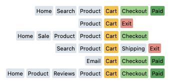
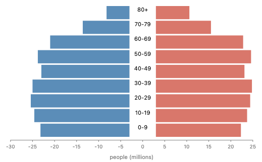
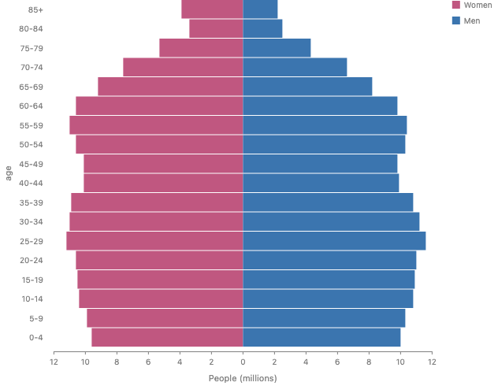
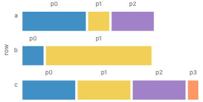
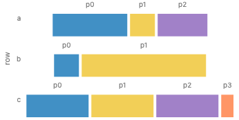
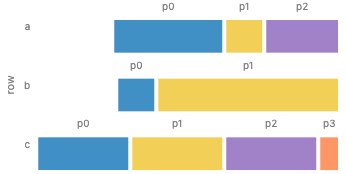

<title>Stacking Areas</title>
<style>
  :root {
    --bg: #fbfaf7;
    --fg: #1f2328;
    --muted: #5f6670;
    --card: #ffffff;
    --line: #e3e0d8;
    --accent: #2f6f9f;
    --rec: #e9f3ea;
    --rec-line: #7aa77f;
    --hl: #fff1b8;
    --code-bg: #f6f5f1;
    --bad: #b3412e;
    --hk: #8a3ea8;
    --hs: #1f7a3a;
    --hn: #9a5b00;
    --hc: #7b8590;
    --ht: #2f6f9f;
  }
  @media (prefers-color-scheme: dark) {
    :root:not([data-theme="light"]) {
      --bg: #16181b;
      --fg: #e6e6e3;
      --muted: #a0a6ad;
      --card: #1e2125;
      --line: #33373d;
      --accent: #7fb3dc;
      --rec: #1d2a20;
      --rec-line: #4f7d55;
      --hl: #4a4020;
      --code-bg: #191b1f;
      --bad: #e58a77;
      --hk: #d199ef;
      --hs: #8fd4a0;
      --hn: #f0b46a;
      --hc: #8a929b;
      --ht: #7fb3dc;
    }
  }
  :root[data-theme="dark"] {
    --bg: #16181b;
    --fg: #e6e6e3;
    --muted: #a0a6ad;
    --card: #1e2125;
    --line: #33373d;
    --accent: #7fb3dc;
    --rec: #1d2a20;
    --rec-line: #4f7d55;
    --hl: #4a4020;
    --code-bg: #191b1f;
    --bad: #e58a77;
    --hk: #d199ef;
    --hs: #8fd4a0;
    --hn: #f0b46a;
    --hc: #8a929b;
    --ht: #7fb3dc;
  }
  * {
    box-sizing: border-box;
  }
  body {
    margin: 0;
    background: var(--bg);
    color: var(--fg);
    font:
      16px/1.55 "Inter",
      system-ui,
      sans-serif;
  }
  main {
    max-width: 1180px;
    margin: 0 auto;
    padding: 24px 16px 80px;
  }
  h1 {
    font-size: 2rem;
    margin: 0.2em 0 0.4em;
  }
  h2 {
    margin-top: 2.4em;
    border-bottom: 1px solid var(--line);
    padding-bottom: 0.2em;
  }
  h3 {
    margin: 0.2em 0 0.5em;
    font-size: 1.15rem;
  }
  h4 {
    margin: 1em 0 0.3em;
  }
  a {
    color: var(--accent);
  }
  code {
    font-family: "JetBrains Mono", ui-monospace, monospace;
    font-size: 0.88em;
  }
  .summary {
    font-size: 1.05rem;
  }
  .summary li {
    margin: 0.4em 0;
  }
  .rec-box {
    background: var(--rec);
    border: 1px solid var(--rec-line);
    border-radius: 10px;
    padding: 14px 16px;
    margin: 16px 0;
  }
  .card {
    background: var(--card);
    border: 1px solid var(--line);
    border-radius: 10px;
    padding: 16px;
    margin: 16px 0;
    min-width: 0;
  }
  .card.approach.rec {
    border-color: var(--rec-line);
    box-shadow: 0 0 0 2px var(--rec) inset;
  }
  .grid {
    display: grid;
    grid-template-columns: repeat(auto-fill, minmax(min(100%, 330px), 1fr));
    gap: 16px;
  }
  .grid .card {
    margin: 0;
  }
  .grid3 {
    display: grid;
    grid-template-columns: repeat(auto-fit, minmax(min(100%, 340px), 1fr));
    gap: 16px;
  }
  .two {
    display: grid;
    grid-template-columns: repeat(auto-fit, minmax(min(100%, 420px), 1fr));
    gap: 12px;
  }
  .figs {
    display: grid;
    grid-template-columns: repeat(auto-fit, minmax(min(100%, 300px), 1fr));
    gap: 12px;
    margin-bottom: 8px;
  }
  figure {
    margin: 0;
  }
  img {
    max-width: 100%;
    height: auto;
    display: block;
    border-radius: 6px;
    background: #fff;
  }
  figcaption {
    font-size: 0.85rem;
    color: var(--muted);
    margin-top: 4px;
  }
  .small img {
    margin-bottom: 8px;
  }
  .small p {
    font-size: 0.9rem;
  }
  pre.code {
    background: var(--code-bg);
    border: 1px solid var(--line);
    border-radius: 8px;
    padding: 10px 0;
    overflow-x: auto;
    margin: 6px 0 10px;
    font-size: 0.84rem;
    line-height: 1.45;
  }
  pre.code code {
    display: block;
    min-width: max-content;
  }
  pre.code .ln {
    display: block;
    padding: 0 12px;
  }
  pre.code .ln.hl {
    background: var(--hl);
    box-shadow: inset 3px 0 0 var(--accent);
  }
  .label {
    font-size: 0.82rem;
    font-weight: 600;
    color: var(--muted);
    margin: 10px 0 2px;
    text-transform: none;
  }
  .muted {
    color: var(--muted);
  }
  .table-wrap {
    overflow-x: auto;
  }
  table {
    border-collapse: collapse;
    width: 100%;
    font-size: 0.9rem;
  }
  th,
  td {
    border: 1px solid var(--line);
    padding: 6px 8px;
    text-align: left;
    vertical-align: top;
  }
  table.verdict {
    width: auto;
    margin: 8px 0;
  }
  table.verdict th {
    width: 2.5em;
  }
  td.bad {
    color: var(--bad);
  }
  details {
    margin: 8px 0;
  }
  summary {
    cursor: pointer;
    color: var(--accent);
    font-weight: 600;
  }
  .toggle {
    position: sticky;
    top: env(safe-area-inset-top, 0px);
    z-index: 5;
    background: var(--bg);
    padding: 8px 0;
    border-bottom: 1px solid var(--line);
    display: flex;
    gap: 8px;
    align-items: center;
    flex-wrap: wrap;
  }
  .toggle button {
    font: inherit;
    border: 1px solid var(--line);
    background: var(--card);
    color: var(--fg);
    border-radius: 6px;
    padding: 3px 12px;
    cursor: pointer;
  }
  .toggle button[aria-pressed="true"] {
    border-color: var(--accent);
    color: var(--accent);
    font-weight: 600;
  }
  body.py .lang-js {
    display: none;
  }
  body:not(.py) .lang-py {
    display: none;
  }
  .decisions li {
    margin: 0.5em 0;
  }
  .item {
    display: grid;
    grid-template-columns: repeat(auto-fit, minmax(min(100%, 420px), 1fr));
    gap: 16px;
    align-items: start;
    border-top: 1px solid var(--line);
    padding-top: 12px;
    margin-top: 12px;
  }
  .wide img {
    width: 100%;
  }
  .note {
    font-size: 0.9rem;
    color: var(--muted);
  }
  .card p,
  .card li {
    overflow-wrap: break-word;
  }
  .insert .figs {
    grid-template-columns: repeat(auto-fit, minmax(min(100%, 440px), 1fr));
  }
  table.methods td {
    min-width: 9em;
  }
  .hljs-keyword,
  .hljs-built_in {
    color: var(--hk);
  }
  .hljs-string {
    color: var(--hs);
  }
  .hljs-number,
  .hljs-literal {
    color: var(--hn);
  }
  .hljs-comment {
    color: var(--hc);
    font-style: italic;
  }
  .hljs-title,
  .hljs-attr,
  .hljs-property {
    color: var(--ht);
  }
</style>
<link rel="preconnect" href="https://fonts.googleapis.com" /><link
  href="https://fonts.googleapis.com/css2?family=Inter:wght@400;600&family=JetBrains+Mono&display=swap"
  rel="stylesheet"
/>
<main>
  <h1>Stacking areas and densities</h1>
  <h2>Recommendation</h2>
  <ul class="summary">
    <li>
      A stacked area is the limit of stacked bars. A stack only moves each bar
      and never resizes one, so in the limit it moves each
      <b>cross-section</b> of an area (its interval at one position u on the
      other axis) and keeps its length. That argument fixes the rules. It is not
      the interface: a shape gives its cross-sections as a <b>function</b> of u,
      and no spec or operator sees a list of samples. Sampling happens only
      inside the engine, at a tolerance.
    </li>
    <li>
      Every function is one generic type, <code>Fun&lt;T&gt;</code>: a function
      of one parameter with its domain, its knots, and a
      <code>Curve</code> (linear, step, monotone or smooth) for how it runs
      between them. An operator may use a small, closed set of operations on
      those functions (map, zip, evaluate, add, scale, restrict, maximum and
      minimum, integrate), and writes back one offset function per child. A box
      answers with a constant function, so every node has cross-sections and
      nothing asks whether a child is a box. <code>crossSection</code> joins
      <code>geometry()</code> as one more query.
    </li>
    <li>
      A stack's <code>baseline</code> option chooses where its own 0 is:
      <code>Baseline.start()</code>, <code>.end()</code>,
      <code>.middle()</code>, <code>.wiggle()</code> or
      <code>.at(part, fraction)</code>. Each gives every cross-section an offset
      and never changes a length. <code>spread</code> takes it too, except
      <code>wiggle</code>; the strongest of four rendered examples is a Likert
      visualization with gaps between its segments. It does not replace
      <code>anchor</code>, which is a choice per pair of children.
    </li>
    <li>
      <code>StackOrigin</code>'s <code>mirrored</code> flag does not need to be
      stored. Whether an axis labels distances from 0 follows from the parts
      (every part is a nonnegative amount), so the stack can compute it, and
      <code>Baseline.at(part, fraction)</code> is all that
      <code>Trait.diverging</code> desugars to.
    </li>
    <li>
      A density is two channels of one mark read at one parameter t,
      <code>ribbon({ x: mass.support(), h: mass.density() })</code>, over a
      <code>Dist</code> type with typed methods.
      <code>partition</code> restricts the function to each cell, which draws
      the croissant with no grid and no <code>intersect</code>. A custom density
      is a <code>reduce</code> that returns a Dist,
      <code>reduce((xs) =&gt; kde(xs))</code>. Any other function is
      <code>fun(f, { domain })</code>, after Chebfun and Julia's
      <code>Fun</code>. Nothing is called <code>fn</code>.
    </li>
    <li>
      Before the scale factor σ is solved, a node can report only a box. The
      proposal gives every geometry query a claim form, a function of σ, so a
      stack can claim room by its cross-sections and <code>pack</code> can fit
      itself to its room (#967). Each claim is a closed form where one exists.
      Whether sizing may also run layout, for the cases with no closed form, is
      open.
    </li>
    <li>
      A <code>spread</code> could read the same cross-sections to place shapes
      by their outlines; how gaps should be measured so they look equal is
      designed on its own page,
      <a href="https://claude.ai/artifact/FKyrky9FQNxPkQactid7Ty"
        >Optical spacing</a
      >.
    </li>
  </ul>
  <h2>Settled</h2>
  <ul>
    <li>
      The stacked area is spelled
      <code
        >chart(jobs).flow(stack({ by: "series", dir: "y" })).mark(ribbon({ x:
        "date", h: "count", fill: "series" }))</code
      >: a stack, then one ribbon per series.
    </li>
    <li>
      The thin-box limit is the argument that sets the rules, not the interface.
      The interface is a function of u, and sampling stays inside the engine.
    </li>
    <li>
      The stack's option is <code>baseline</code>, with values
      <code>Baseline.start()</code>, <code>.end()</code>,
      <code>.middle()</code>, <code>.at(part, fraction)</code> and
      <code>.wiggle()</code>. <code>Trait.diverging</code> stays the default and
      desugars to <code>Baseline.at</code>, and an explicit
      <code>baseline</code> over a diverging unit is an error.
    </li>
    <li>
      The cross-section interface (a shape's cross-sections are a function, read
      with a closed set of operations) and the custom methods (<code>map</code>
      and one <code>reduce</code>) are the agreed direction. Details under them
      stay open where listed below.
    </li>
    <li>
      The value at one u is a <b>cross-section</b>, the function from u to it is
      "a shape's cross-sections", and the trait is <code>HasCrossSection</code>.
      Users never write the word.
    </li>
    <li>
      <code>spread</code> takes <code>baseline</code> too, with
      <code>Baseline.start()</code>, <code>.end()</code>,
      <code>.middle()</code> and <code>.at(part, fraction)</code>.
      <code>Baseline.wiggle()</code> stays stack-only. <code>layer</code> and
      <code>scatter</code> do not take it.
    </li>
    <li>
      Custom methods on a field expression are two verbs:
      <code>.map((x, i, xs) =&gt; value, { unit })</code> for one value per row,
      and <code>.reduce((xs) =&gt; value, { unit })</code> for one value per
      group. There is one form of <code>reduce</code>.
    </li>
    <li>
      A 100% stack is <code>normalize</code> on the values followed by a plain
      stack: there is no divide operation.
    </li>
    <li>
      A density is drawn by a channel pair, <code>support()</code> for the
      position (Josh is checking the name with Matt Kay, ggdist) and the density
      for the height; whether that is <code>density()</code> or
      <code>pdf()</code> is decision 6. Rejected for the position:
      <code>value()</code>, which clashes with GoFish's
      <code>value(...)</code> constructor, and <code>points()</code> or
      <code>grid()</code>, which name the sampling.
    </li>
    <li>
      <code>.then</code> cannot be the custom method's name: a field expression
      with a <code>then</code> method would be adopted as a promise by
      <code>resolveValue</code>.
    </li>
    <li>
      How a bin's cells are shared stays under review, so no callback form is
      proposed for bins here.
    </li>
  </ul>
  <p class="note">
    This page is focused on two examples, the stacked area and the croissant,
    the idea behind them, and the interface it leads to. Spacing moved to its
    own page. The full survey of eleven examples is at commit
    <a
      href="https://github.com/gofish-graphics/gofish-graphics/blob/2f3b2a4bf/proposals/stack-profile/proposal.md"
      >2f3b2a4bf</a
    >. Every type on this page is in
    <code>proposals/stack-profile/types-sketch.ts</code>, which typechecks on
    its own.
  </p>
  <div class="toggle">
    <span class="muted">Code in</span
    ><button data-lang="js" aria-pressed="true">JavaScript</button
    ><button data-lang="py" aria-pressed="false">Python</button>
  </div>
  <details>
    <summary>Terms used on this page</summary>
    <div class="table-wrap">
      <table>
        <tr>
          <td><b>Cross-section</b></td>
          <td>
            A shape's interval along one axis at one position u on the other
            axis: how far it reaches below and above its baseline there. It is
            two-sided, and it is a query at a point, not a sample. "A shape's
            cross-sections" means the function from u to that interval. A box's
            cross-section is the same at every u.
          </td>
        </tr>
        <tr>
          <td><b>Slice</b></td>
          <td>
            Used only in the limit argument: one of the thin boxes a stacked bar
            visualization is made of.
          </td>
        </tr>
        <tr>
          <td><b>Function value</b></td>
          <td>
            A function of one parameter t, with its domain, the interval of t it
            is defined over (the generic type <code>Fun&lt;T&gt;</code>). A
            density's height over t is one, and so is a cross-section.
          </td>
        </tr>
        <tr>
          <td><b>Parameter of a mark</b></td>
          <td>
            The one variable t that a mark which draws along a path is read at.
            Every channel of it that holds a function is read at the same t. The
            user never writes t.
          </td>
        </tr>
        <tr>
          <td><b>Knot</b></td>
          <td>
            A point where a function value starts a new piece. A function built
            from rows has one knot per row, and between knots it runs by its
            <code>curve</code>, one of <code>Curve.linear()</code>,
            <code>.step()</code>, <code>.monotone()</code> and
            <code>.smooth()</code>.
          </td>
        </tr>
        <tr>
          <td><b>Baseline</b></td>
          <td>
            A node's own 0 point. A rect's baseline is its bottom edge, and it
            bubbles up: a parent with <code>alignment: "baseline"</code> lines
            up its children's 0 points. A stack's <code>baseline</code> option
            chooses where the stack's 0 is. In the code the model is
            <code>StackOrigin</code> (<code>constraints/distribute.ts</code>).
          </td>
        </tr>
        <tr>
          <td><b>Lowering</b></td>
          <td>
            The last step of rendering, which turns a laid-out node into drawing
            commands (paths, in pixels).
          </td>
        </tr>
        <tr>
          <td><b>Scale factor (σ)</b></td>
          <td>
            Pixels per data unit in one scope. It is solved once, from the
            root's claim against the canvas, before any node is laid out.
          </td>
        </tr>
        <tr>
          <td><b>Claim</b></td>
          <td>
            What a node reports up the tree before σ is solved: how much room it
            needs, with every number a function of σ. Today a claim is a box:
            one <code>Extent</code> per axis (<code>ast/extent.ts</code>).
          </td>
        </tr>
        <tr>
          <td><b>Per-x form</b></td>
          <td>
            <code>scatter</code> or <code>spread</code> by x, then
            <code>stack</code>, which is today's spelling of a stacked area. The
            stack runs once in each x column and sees only that column.
          </td>
        </tr>
        <tr>
          <td><b>Field expression</b></td>
          <td>
            <code>field("mass")</code>, a column expression like polars'
            <code>pl.col("mass")</code>. Bare, it is a value per row. Its
            methods make other kinds of value (see "What the methods compute").
          </td>
        </tr>
      </table>
    </div>
  </details>
  <h2 id="limit">Why stacking may reshape an area</h2>
  <article class="card">
    <p>
      Stacking areas changes the shape of each area, which a box cannot do.
      Josh's framing: "a ribbon's area is a limit of some AABBs. So if that
      shape change can happen with the discrete AABB union I feel like it's more
      acceptable and natural to have the ribbon behavior be guided by that." (An
      AABB is an axis-aligned bounding box, the box every GoFish node reports
      today.) This section uses that limit to find the rules a stack must keep.
      The rules then define the interface in the next section, which has no
      slices in it.
    </p>
    <figure class="wide">
      
      <figcaption>
        Four series as stacked bars 5, 10, 20 and 60 bars wide, then the stacked
        area. Each bar reads its series at the bar's middle. Real renders with
        today's <code>spread</code> and <code>stack</code>; each panel scales to
        its own height.
      </figcaption>
    </figure>
    <p class="label">Each bar panel, which runs today</p>
    <pre
      class="code lang-js"
    ><code class="language-javascript" data-hl="">chart(rows) // one row per series per bar
  .flow(
    spread({ by: &quot;bar&quot;, dir: &quot;x&quot;, spacing: 0 }),
    stack({ by: &quot;series&quot;, dir: &quot;y&quot; })
  )
  .mark(rect({ w: barWidth, h: &quot;value&quot;, fill: &quot;series&quot; }));</code></pre>
    <pre
      class="code lang-py"
    ><code class="language-python" data-hl="">chart(rows).flow(
    spread(by=&quot;bar&quot;, dir=&quot;x&quot;, spacing=0),
    stack(by=&quot;series&quot;, dir=&quot;y&quot;),
).mark(rect(w=bar_width, h=&quot;value&quot;, fill=&quot;series&quot;))</code></pre>
    <h4>The argument, checked step by step</h4>
    <ol>
      <li>
        <b>A ribbon is the limit of a row of thin rects</b>, one per slice of x.
        Correct. One detail: each rect reads the series at its slice, so the
        limit is the series' curve through its rows. How a series is read
        between its rows (its <code>curve</code>) is part of the shape.
      </li>
      <li>
        <b>In the discrete case, stacking uses only what boxes allow.</b>
        Correct. Each column is an ordinary stack of rects, as in the panels
        above. The stack moves each rect and never changes its width or height.
      </li>
      <li>
        <b
          >One series' rects form a staircase band whose outline changes
          shape</b
        >, because each slice moves by a different amount, while no box is
        reshaped. Correct. In the limit the staircase becomes the stacked
        ribbon.
      </li>
      <li>
        <b
          >So in the limit a stack moves each cross-section and never resizes
          it.</b
        >
        Correct. The thickness at each x never changes, only the offset, so
        stacking is a translation at each u. Three invariants follow. Thickness
        is kept at every u, so every band keeps its area (this is Cavalieri's
        principle: two regions whose cross-sections have equal length at every u
        have equal area). The order of the bands is kept at every u. A baseline
        is only an offset, the same for every band at one u.
      </li>
      <li>
        <b>Series sampled at different x fit too.</b> Splitting a slice in two
        does not change the shape, so the columns can use the union of every
        series' breakpoints. Correct, with one condition: the new slice's height
        is the series' value at the new x, which comes from its curve (linear
        between rows, as ggplot2 reads it). Outside its own x range a series'
        thickness is 0. In the function form this is just evaluation: a series'
        cross-section can be asked at any u.
      </li>
      <li>
        <b>Contour spacing reads the same cross-sections.</b> The closest
        approach of two shapes is the smallest gap over their shared positions,
        a skyline. Correct, with a limit: the gap is measured along the spacing
        axis at each u, not as a straight-line distance. The optical spacing
        page shows what that does to glyphs and shapes.
      </li>
      <li>
        <b
          >A rigid shape (a circle, text, a line with no thickness) is one box
          that cannot be split, so it gets one translation.</b
        >
        This needs a correction. The full survey made a rigid part in a curved
        stack an error. The limit gives a rigid part a defined place instead: it
        rests on the highest point of the boundary below it across its width, as
        a skyline does. But then the cross-sections under it are no longer
        glued, and a gap opens wherever the boundary below is lower. So the
        argument turns the old rule into a choice, which is decision 1.
      </li>
    </ol>
    <p>
      <b>What the argument does not say.</b> It does not say a shape is stored
      as slices, or that an operator should see them. The slices are the thin
      boxes of the argument. Shrinking them gives a function of u, and the next
      section makes that function the interface.
    </p>
    <h4>How it relates to the approaches in the full survey</h4>
    <p>
      Runner-up B, the per-x form, is this argument at a fixed dx: the slices
      are the rows' x positions, each column is stacked on its own, and the
      ribbon connects the stacked points. Approach A is the limit: a child gives
      its cross-sections as a function of x, so the stack does not depend on
      where the rows happen to be. A can ship first as B, by choosing the
      columns as the union of breakpoints. That is the declared shortcut in the
      full survey.
    </p>
    <h4>Does every baseline only move cross-sections?</h4>
    <div class="table-wrap">
      <table>
        <tr>
          <th>Baseline</th>
          <th>Offset at u</th>
          <th>Only moves cross-sections?</th>
        </tr>
        <tr>
          <td><code>Baseline.start()</code></td>
          <td>0</td>
          <td>Yes</td>
        </tr>
        <tr>
          <td><code>Baseline.middle()</code></td>
          <td>minus half the total at u</td>
          <td>Yes</td>
        </tr>
        <tr>
          <td><code>Baseline.at(part, fraction)</code></td>
          <td>
            minus (the start of <code>part</code> at u plus
            <code>fraction</code> times its thickness at u)
          </td>
          <td>Yes</td>
        </tr>
        <tr>
          <td><code>Baseline.wiggle()</code></td>
          <td>
            a running sum over the positions to the left, chosen to flatten the
            bands (d3's <code>stackOffsetWiggle</code>)
          </td>
          <td>
            Yes, but its value depends on dx. d3 sums over the rows' x, so finer
            rows give a slightly different curve. In the limit the sum is an
            integral, so the proposal defines wiggle on the function, not on the
            rows.
          </td>
        </tr>
      </table>
    </div>
    <p>
      Every baseline holds, and nothing in layout resizes a cross-section. A
      100% stacked area is not a separate divide operation. It is
      <code>normalize</code>, the callback
      <code>(x, i, xs) =&gt; x / sum(xs)</code> with <code>xs</code> the values
      in one x column, which changes the values before layout, followed by a
      plain stack that only moves cross-sections. When the whole is a drawn
      shape instead of 1 (a bottle filled by share), that is a size choice for
      the stack's total, not a new operation.
    </p>
  </article>
  <h2 id="interface">The interface</h2>
  <article class="card">
    <p>
      This section says what a shape reports, what an operator may do with it,
      what the operator writes back, and how this fits the
      <code>geometry()</code> queries that exist today. Every type shown here is
      in <code>types-sketch.ts</code>, which typechecks with
      <code>tsc --noEmit --strict</code>.
    </p>
    <h4>A function value</h4>
    <p>
      Every function on this page is one generic type,
      <code>Fun&lt;T&gt;</code>: a function of one parameter, with the interval
      it is defined over (its <i>domain</i>), so a spec never names one. A
      cross-section is a <code>Fun&lt;Interval&gt;</code>, an edge, a thickness
      or a density is a <code>Fun&lt;number&gt;</code>, an operator's offset is
      a <code>Fun&lt;number&gt;</code>, and the claim in "Geometry before
      layout" is a <code>Fun&lt;Extent&gt;</code>.
    </p>
    <p>
      A function also lists its knots and how it runs between them. That is the
      <code>Curve</code> family GoFish already has: <code>Curve.linear()</code>,
      <code>.step()</code>, <code>.monotone()</code> and
      <code>.smooth()</code> are read over the parameter of a run
      (<code>families/curve.ts</code>), and they are the same values a ribbon's
      <code>curve</code> option takes, so a ribbon's cross-sections carry the
      ribbon's own curve. <code>catmullRom</code> is a shape on screen and the
      routers (<code>bezier</code>, <code>orthogonal</code>, <code>arc</code>,
      <code>perfectArrows</code>) join pairs of points, so neither is allowed
      here. What the curve makes exact:
    </p>
    <ul>
      <li>
        <b><code>linear</code> and <code>step</code></b
        >: sums, maxima and integrals come from the knots alone. A sum of two
        linear functions over the union of their knots is linear again, and so
        is a sum of two steps.
      </li>
      <li>
        <b><code>monotone</code> and <code>smooth</code></b
        >: both are cubic Hermite splines, one cubic per interval between knots
        (<code>src/spline.ts</code>: Steffen's cubic and the modified Akima
        cubic). A sum over the union of knots is still one cubic per piece, so a
        maximum (a root of a quadratic) and an integral have a closed form per
        piece. But the sum is not the curve <code>Curve.monotone</code> would
        draw through the summed values, because each curve's slopes come from
        its own values. So the engine has to keep the cubic pieces, not a curve
        name. Until it does, these are read to a tolerance.
      </li>
      <li>
        <b>No curve</b>: a function with no knots, such as a kernel density, is
        read to a tolerance.
      </li>
    </ul>
    <p class="label">The function value</p>
    <pre
      class="code"
    ><code class="language-typescript">type Interval = { readonly min: number; readonly max: number };

/** The `Curve` values that are read over a parameter (families/curve.ts):
 *  `Curve.linear()`, `.step()`, `.monotone()` and `.smooth()`. The same
 *  value a ribbon&#x27;s `curve` option takes. Screen-space curves
 *  (`catmullRom`) and the routers are not allowed here. */
type ParameterCurve = {
  readonly kind: &quot;linear&quot; | &quot;step&quot; | &quot;monotone&quot; | &quot;smooth&quot;;
};

/** A function of one parameter, with the interval it is defined over. */
type Fun&lt;T&gt; = {
  readonly domain: Interval;
  readonly at: (t: number) =&gt; T;
  /** Where a new piece starts. A function built from rows has one knot per
   *  row. */
  readonly knots?: readonly number[];
  /** How it runs between knots. With no curve (a kernel density, which has
   *  no knots) every query is answered to a tolerance. */
  readonly curve?: ParameterCurve;
};

/** Make a function value: the function and its domain, as Chebfun&#x27;s
 *  `chebfun(f, [a, b])` and Julia&#x27;s `Fun(f, a..b)` take them. */
const fun = &lt;T&gt;(
  at: (t: number) =&gt; T,
  o: { domain: Interval; knots?: readonly number[]; curve?: ParameterCurve }
): Fun&lt;T&gt; =&gt; ({ at, ...o });</code></pre>
    <h4>The cross-section query</h4>
    <p>
      A shape's cross-sections are one query: given an axis, a
      <code>Fun&lt;Interval&gt;</code> from u (the position on the other axis)
      to the interval the shape covers there, measured from its baseline. A box
      answers with a constant function, the same way
      <code>defaultGeometry</code> falls back to the box for the other queries.
      So every node has cross-sections, and no operator dispatches on whether a
      child is a box or a ribbon.
    </p>
    <p class="label">The query, and the helper every reader calls</p>
    <pre
      class="code"
    ><code class="language-typescript">type Box = { min: [number, number]; max: [number, number] };
interface HasBox {
  readonly box: Box;
}

/** The geometry query: for each u on the cross axis, the shape&#x27;s reach
 *  below (`min`, at most 0) and above (`max`) its baseline along `axis`. */
type CrossSection = Fun&lt;Interval&gt;;
interface HasCrossSection {
  readonly crossSection?: (axis: 0 | 1) =&gt; CrossSection;
}

/** The helper every reader calls. A shape that does not answer is read as
 *  its box: a constant cross-section, as `defaultGeometry` falls back to
 *  the box for the other queries. So every node has one, and nothing asks
 *  &quot;is this a box&quot;. */
const crossSection = (
  g: HasBox &amp; HasCrossSection,
  axis: 0 | 1
): CrossSection =&gt; {
  if (g.crossSection) return g.crossSection(axis);
  const across = 1 - axis;
  const reach = { min: g.box.min[axis], max: g.box.max[axis] };
  return fun(() =&gt; reach, {
    domain: { min: g.box.min[across], max: g.box.max[across] },
    knots: [],
    curve: { kind: &quot;linear&quot; },
  });
};</code></pre>
    <h4>What an operator may do</h4>
    <p>
      An operator may use only these operations. Each one takes functions and
      returns a function or a number, written as composing closures, so none of
      them samples. Two are generic: <code>map</code> applies a function to
      every value (an edge and a thickness are <code>map</code>s of a
      cross-section), and <code>zip</code> combines two functions pointwise over
      the hull of their domains (a sum is a <code>zip</code>). The sketch file
      has a short implementation of each.
    </p>
    <div class="table-wrap">
      <table>
        <tr>
          <th>Operation</th>
          <th>What it gives</th>
          <th>Exact for <code>linear</code> and <code>step</code>?</th>
        </tr>
        <tr>
          <td><code>map</code>, <code>zip</code></td>
          <td>an edge, a thickness, a sum, a claim's sum</td>
          <td>yes, when the function applied is linear</td>
        </tr>
        <tr>
          <td>Evaluate at u</td>
          <td>a thickness or an edge at one position; 0 outside the domain</td>
          <td>yes</td>
        </tr>
        <tr>
          <td>Add two, pointwise</td>
          <td>the stack's running sum; the knots are the union</td>
          <td>yes, the curve is kept</td>
        </tr>
        <tr>
          <td>Scale by a number</td>
          <td>
            minus half the total for <code>Baseline.middle()</code>; minus an
            edge
          </td>
          <td>yes</td>
        </tr>
        <tr>
          <td>Restrict to a cell</td>
          <td>what <code>partition</code> does</td>
          <td>yes</td>
        </tr>
        <tr>
          <td>Maximum and minimum over the domain</td>
          <td>the box, and the scale domain</td>
          <td>yes: at a knot or an end</td>
        </tr>
        <tr>
          <td>Integrate over the domain</td>
          <td>area</td>
          <td>
            yes: trapezoids on the knots for <code>linear</code>; each value
            held to the next knot for <code>step</code>
          </td>
        </tr>
      </table>
    </div>
    <p>
      What it writes back: one offset per child, a
      <code>Fun&lt;number&gt;</code>. Today it writes one number, the translate.
      For a box child the function is constant, which is today's translate. What
      it may not do: read a child's rows, vertices or samples, or change the
      size of a cross-section.
    </p>
    <p>
      <b><code>Baseline.wiggle()</code> needs more.</b> d3's wiggle chooses the
      baseline's slope at u from each band's thickness and its slope there,
      weighted by thickness. So it needs the derivative of each thickness,
      products of functions, and a running integral (an integral from the start
      up to u, which is a function, not a number). For functions built from rows
      these are still exact: the derivative of a straight line is a constant
      between knots. These three operations join the set only for wiggle, which
      is part of decision 3.
    </p>
    <p class="label">The operations, and what an operator writes back</p>
    <pre
      class="code"
    ><code class="language-typescript">const union = (a: readonly number[] = [], b: readonly number[] = []) =&gt;
  a
    .concat(b)
    .filter((t, i, ts) =&gt; ts.indexOf(t) === i)
    .sort((p, q) =&gt; p - q);
const hull = (a: Interval, b: Interval): Interval =&gt; ({
  min: Math.min(a.min, b.min),
  max: Math.max(a.max, b.max),
});
const inside = (f: Fun&lt;unknown&gt;, t: number) =&gt;
  t &gt;= f.domain.min &amp;&amp; t &lt;= f.domain.max;

/** The curve of a pointwise sum. Linear plus linear is linear, and step
 *  plus step is step, exactly. A sum with a cubic piece (monotone, smooth)
 *  is a piecewise cubic on the union of knots, exact per piece, but it is
 *  not the curve `Curve.monotone` would draw through the summed values, so
 *  the engine keeps the pieces; the sketch leaves the curve unset. */
const sumCurve = (
  a?: ParameterCurve,
  b?: ParameterCurve
): ParameterCurve | undefined =&gt;
  a &amp;&amp; b &amp;&amp; a.kind === b.kind &amp;&amp; (a.kind === &quot;linear&quot; || a.kind === &quot;step&quot;)
    ? a
    : undefined;

/** Apply `g` to every value. `g` must be linear (take an edge, negate,
 *  scale) for the curve to stay exact. */
const map = &lt;A, B&gt;(f: Fun&lt;A&gt;, g: (a: A) =&gt; B): Fun&lt;B&gt; =&gt; ({
  ...f,
  at: (t) =&gt; g(f.at(t)),
});

/** Combine two functions pointwise over the hull of their domains. Outside
 *  its own domain each reads its `zero` (a thickness of 0). `h` must be
 *  linear (a sum) for the curve to carry over. */
const zip = &lt;A, B, C&gt;(
  f: Fun&lt;A&gt;,
  g: Fun&lt;B&gt;,
  h: (a: A, b: B) =&gt; C,
  zero: readonly [A, B]
): Fun&lt;C&gt; =&gt; ({
  domain: hull(f.domain, g.domain),
  at: (t) =&gt;
    h(inside(f, t) ? f.at(t) : zero[0], inside(g, t) ? g.at(t) : zero[1]),
  knots: union(f.knots, g.knots),
  curve: sumCurve(f.curve, g.curve),
});

/** 1. Evaluate at u. Outside its domain a thickness is 0. */
const evaluate = (f: Fun&lt;number&gt;, u: number): number =&gt;
  inside(f, u) ? f.at(u) : 0;

/** 2. Add two, pointwise: the stack&#x27;s running sum. */
const add = (f: Fun&lt;number&gt;, g: Fun&lt;number&gt;): Fun&lt;number&gt; =&gt;
  zip(f, g, (a, b) =&gt; a + b, [0, 0]);

/** 3. Scale by a number: &quot;minus half the total&quot; for Baseline.middle(). */
const scale = (f: Fun&lt;number&gt;, k: number): Fun&lt;number&gt; =&gt; map(f, (v) =&gt; k * v);

/** 4. Restrict to a cell. This is what `partition` does. */
const restrict = &lt;T&gt;(f: Fun&lt;T&gt;, cell: Interval): Fun&lt;T&gt; =&gt; ({
  ...f,
  domain: {
    min: Math.max(f.domain.min, cell.min),
    max: Math.min(f.domain.max, cell.max),
  },
  knots: f.knots?.filter((k) =&gt; k &gt;= cell.min &amp;&amp; k &lt;= cell.max),
});

/** The points an exact rule reads: the domain&#x27;s ends and the knots. With a
 *  cubic curve or none, the engine adds points until the answer is within
 *  `tolerance` (or solves each cubic piece); the sketch samples evenly. */
const breakpoints = &lt;T&gt;(f: Fun&lt;T&gt;): number[] =&gt; {
  const ends = union([f.domain.min, f.domain.max], f.knots);
  const exact = f.curve?.kind === &quot;linear&quot; || f.curve?.kind === &quot;step&quot;;
  if (exact) return ends.filter((t) =&gt; inside(f, t));
  const n = 512;
  const { min, max } = f.domain;
  const even: number[] = [];
  for (let i = 0; i &lt;= n; i++) even.push(min + ((max - min) * i) / n);
  return union(ends, even).filter((t) =&gt; inside(f, t));
};

/** 5. Maximum and minimum over the domain: the box, and the scale domain.
 *  Exact for linear and step: the extremes are at knots. */
const maximum = (f: Fun&lt;number&gt;): number =&gt;
  Math.max(...breakpoints(f).map((t) =&gt; f.at(t)));
const minimum = (f: Fun&lt;number&gt;): number =&gt; -maximum(scale(f, -1));

/** 6. Integrate over the domain: area, and Baseline.wiggle(). Exact for
 *  linear (trapezoids on the knots) and step (each value held to the next
 *  knot). */
const integrate = (f: Fun&lt;number&gt;): number =&gt; {
  const ts = breakpoints(f);
  const held = f.curve?.kind === &quot;step&quot;;
  let s = 0;
  for (let i = 1; i &lt; ts.length; i++) {
    const [a, b] = [f.at(ts[i - 1]), f.at(ts[i])];
    s += (ts[i] - ts[i - 1]) * (held ? a : (a + b) / 2);
  }
  return s;
};

/** A cross-section&#x27;s lower or upper edge, and its thickness. */
const edge = (cs: CrossSection, side: &quot;min&quot; | &quot;max&quot;): Fun&lt;number&gt; =&gt;
  map(cs, (r) =&gt; r[side]);
const thickness = (cs: CrossSection): Fun&lt;number&gt; =&gt;
  map(cs, (r) =&gt; r.max - r.min);

/** What an operator writes back for each child: an offset for each u.
 *  Today it is one number, the translate. For a box child the function is
 *  constant, which is today&#x27;s translate. */
type Placement = { readonly offset: Fun&lt;number&gt; };</code></pre>
    <p class="label">A stack, written with those operations</p>
    <pre
      class="code"
    ><code class="language-typescript">/** A stack, written with the operations above and nothing else. Child i&#x27;s
 *  lower edge lies on child i − 1&#x27;s upper edge at every u, and `baseline`
 *  turns the thicknesses into the offset of the whole. No child is
 *  resized. */
const stack = (
  children: readonly CrossSection[],
  baseline: (thick: readonly Fun&lt;number&gt;[]) =&gt; Fun&lt;number&gt;
): Placement[] =&gt; {
  const thick = children.map(thickness);
  const base = baseline(thick);
  let below = scale(base, 0); // the sum of the thicknesses before child i
  return children.map((c, i) =&gt; {
    const offset = add(add(base, below), scale(edge(c, &quot;min&quot;), -1));
    below = add(below, thick[i]);
    return { offset };
  });
};

const total = (parts: readonly Fun&lt;number&gt;[]): Fun&lt;number&gt; =&gt; parts.reduce(add);
const Baseline = {
  start: () =&gt; (parts: readonly Fun&lt;number&gt;[]) =&gt; scale(total(parts), 0),
  middle: () =&gt; (parts: readonly Fun&lt;number&gt;[]) =&gt; scale(total(parts), -0.5),
};

// A box child answers with a constant cross-section, so its offset is
// constant: today&#x27;s translate.
const bars = [
  crossSection({ box: { min: [0, 0], max: [10, 30] } }, 1),
  crossSection({ box: { min: [0, 0], max: [10, 20] } }, 1),
];
const placed = stack(bars, Baseline.start());
const translate = evaluate(placed[1].offset, 5); // 30</code></pre>
    <h4>How it relates to <code>geometry()</code></h4>
    <p>
      Today <code>Geometry</code> is
      <code>HasBox &amp; HasEnclosingCircle &amp; HasOutline</code>
      (<code>ast/geometry/index.ts</code>). Every query except
      <code>box</code> is optional, each has a helper that falls back to the
      box, and <code>GoFishNode.geometry()</code> answers only after layout, in
      the node's local pixel frame. Its header comment says the form that
      answers while sizing is issue #967. <code>crossSection</code> joins
      <code>Geometry</code> as one more optional query, with the helper above.
      The other queries can be read from it: <code>box</code> is the
      cross-section's minimum and maximum, and an outline is the upper edge
      followed by the lower edge reversed, sampled to the outline's tolerance.
    </p>
    <p>
      A stack, though, needs the function before layout, in data units. It gives
      the scale its own space, which is the largest total over u, and the scale
      must be solved before anything has pixels. The prototype shows the split:
      its <code>resolveUnderlyingSpace</code> uses the function in data units,
      and its <code>layout</code> uses it in pixels
      (<code>_prototypeFnCurve.tsx</code>). So the same function is asked twice:
      before σ is solved, as the child's claim along the stack axis (a function
      of u instead of one number), and after layout, as the geometry query.
      "Geometry before layout (#967)" below designs the claim form.
    </p>
    <p>
      <b
        >Does a function-valued size fit how a stack folds its children's
        spaces?</b
      >
      On main, PR #1268 is merged, and it names the properties traits; the trait
      a stack checks is <code>CanSum</code> on the units it adds. The stack's
      fold is <code>distributeSpaceFold</code> in
      <code>constraints/distribute.ts</code>: it needs every part's space to be
      continuous with an origin (pinned or free), unifies their units, checks
      with <code>Units.sum</code> that the units of the free parts can be
      summed, and lays the parts end to end, each part's interval about its
      baseline added to the running sum. A function-valued size fits that: the
      sum is pointwise, the unit check reads units and not values so it does not
      change, and the stack's space becomes the minimum of its lowest edge and
      the maximum of its highest edge over u, which are two queries in the set
      above. I have not built it, so this is a reading of the code, not a test.
    </p>
    <h4>What changes for <code>ribbon</code></h4>
    <p>
      On main, <code>ribbon</code> and <code>line</code> are relational marks
      (<code>createRelationalMark</code> in <code>ast/marks/chart.ts</code>):
      each builds a <code>Connect</code> node that joins consecutive marks, and
      in <code>.mark()</code> position it adds an invisible
      <code>blank()</code> per row for the connector to join. A ribbon there has
      no <code>x</code> channel and no shape of its own. In the proposal a
      ribbon is one node per series that owns its function, built from its rows
      (one knot per row) or given as a function value, and it answers
      <code>crossSection</code>, so the stack above it moves the whole band at
      once.
    </p>
    <h4>Where sampling happens</h4>
    <p>Only in three places, all inside the engine:</p>
    <ol>
      <li>
        <b>When a mark is drawn (lowering).</b> The function is resampled
        adaptively, in pixels, composed with the coordinate transform, to half a
        pixel. The prototype does this with the existing
        <code>adaptive-resampling.ts</code>.
      </li>
      <li>
        <b>When a geometry query is asked at a tolerance.</b> This is how
        <code>outline(tolerance)</code> works today: "a polyline that is never
        farther from the true shape than the tolerance asked for"
        (<code>ast/geometry/outline.ts</code>).
      </li>
      <li>
        <b
          >When a maximum or an integral of a function with no closed form is
          needed</b
        >, such as a kernel density's peak for the scale domain, or the integral
        inside <code>Baseline.wiggle()</code>. For a <code>linear</code> or
        <code>step</code> function none is needed, since the knots give exact
        answers.
      </li>
    </ol>
    <p>
      One honest exception: the prototype's <code>dataExtent</code> finds a
      curve's maximum with 512 even samples plus golden-section refinement, when
      the mark is built, before layout. That is the one place it samples early.
      In the proposal it is case 3, and it runs only for a function with a cubic
      curve or none. "Geometry before layout (#967)" below gives it one named
      place.
    </p>
    <h4>Naming: cross-section</h4>
    <p>
      Settled: <b>cross-section</b>, and the trait <code>HasCrossSection</code>.
      It names an interval, so it is two-sided, where "profile" suggests one
      side. The names that were compared:
    </p>
    <div class="table-wrap">
      <table>
        <tr>
          <th>Name</th>
          <th>Where</th>
          <th>What it names</th>
          <th>Sides</th>
        </tr>
        <tr>
          <td>profile</td>
          <td>elevation profile, lathe profile, depth profile</td>
          <td>one curve</td>
          <td>one, which is Josh's concern</td>
        </tr>
        <tr>
          <td>skyline</td>
          <td>computational geometry</td>
          <td>the upper envelope of a set of boxes</td>
          <td>one</td>
        </tr>
        <tr>
          <td>contour</td>
          <td>Reingold and Tilford's tidy trees (1981)</td>
          <td>
            a left contour and a right contour, each the outermost node at each
            depth, compared to place subtrees
          </td>
          <td>one each, used as a pair</td>
        </tr>
        <tr>
          <td>cross-section</td>
          <td>Cavalieri's principle</td>
          <td>
            two regions whose cross-sections have equal length at every height
            have equal area. A stack is this exactly: it moves each
            cross-section and keeps its length, so every band keeps its area
          </td>
          <td>two</td>
        </tr>
        <tr>
          <td>chord</td>
          <td>Steiner symmetrization</td>
          <td>
            each chord perpendicular to a line is replaced with a chord of the
            same length centered on the line. This is
            <code>Baseline.middle()</code>
          </td>
          <td>two</td>
        </tr>
        <tr>
          <td>parallel X-ray</td>
          <td>Gardner, <i>Geometric Tomography</i></td>
          <td>
            the function giving the length of every chord in one direction
          </td>
          <td>thickness only, no position</td>
        </tr>
        <tr>
          <td>tube</td>
          <td>interval analysis (the Tubex and Codac libraries)</td>
          <td>
            an interval of two functions over time, stored as a set of slices of
            width δ. The same split as here, between the idea and its sampled
            storage
          </td>
          <td>two</td>
        </tr>
        <tr>
          <td>ribbon, area</td>
          <td>
            ggplot2 <code>geom_ribbon(ymin, ymax)</code>, d3
            <code>area().y0().y1()</code>
          </td>
          <td>a band given by its two edges</td>
          <td>two</td>
        </tr>
        <tr>
          <td>ascent, descent</td>
          <td>typography; GoFish's own words</td>
          <td>
            reach above and below a baseline (GoFish never says height and depth
            for this)
          </td>
          <td>two, named separately</td>
        </tr>
      </table>
    </div>
    <p>
      Not chosen: "extent" (d3's <code>extent</code> returns
      <code>[min, max]</code>, but GoFish already uses <code>Extent</code> for a
      size claim) and "band" (it clashes with a kernel's bandwidth on this same
      page, and with d3's band scale).
    </p>
  </article>
  <h2 id="before-layout">Geometry before layout (#967)</h2>
  <article class="card">
    <p>
      A stack needs its children's cross-sections before σ is solved, and
      <code>pack</code> needs its children's circles at the same moment (#967).
      This section proposes one design for both. (An AABB is an axis-aligned
      bounding box, the box every node reports today.)
    </p>
    <h4>Where the gap is</h4>
    <div class="table-wrap">
      <table>
        <tr>
          <th>Moment</th>
          <th>What flows</th>
          <th>What a node can know about a child</th>
        </tr>
        <tr>
          <td>
            1. Before σ is solved (<code>resolveExtent</code>, a walk after the
            types)
          </td>
          <td>
            Each node's claim, up the tree: one <code>Extent</code> per axis
            (<code>ascent</code>, <code>descent</code>, <code>width</code>),
            each a <code>Pwl.Value</code>, a piecewise linear function of σ
            (<code>ast/extent.ts</code>, <code>solver/pwl.ts</code>), or none
            for content that takes the room it is given. The scope fit
            (<code>ScopeRegistry.fit</code>, <code>solver/scopes.ts</code>) then
            solves σ from the root's claim against the canvas.
          </td>
          <td>Its box, as functions of σ. Nothing else.</td>
        </tr>
        <tr>
          <td>2. Inside a parent's <code>layout()</code></td>
          <td>
            Down: a size, the scales, and optionally a shape (a convex ring;
            <code>partition</code>, <code>treemap</code> and
            <code>enclose</code> make one). Up: the laid-out child.
          </td>
          <td>
            Its full <code>geometry()</code>: box, enclosing circle, outline at
            a tolerance. <code>pack</code> places its circles this way today.
          </td>
        </tr>
        <tr>
          <td>3. Drawing (lowering)</td>
          <td>The same laid-out tree, in pixels.</td>
          <td>The same laid-out nodes.</td>
        </tr>
      </table>
    </div>
    <p>
      So moments 2 and 3 already share one laid-out tree: layout and drawing are
      as close as Josh guessed. The one place where a node knows only a box is
      moment 1, before σ. That is why <code>pack</code> cannot fit itself to its
      room (#967), and why a stack cannot yet be given cross-sections. The
      dividing line is the scale solve, not the line between layout and drawing.
    </p>
    <h4>The proposal: a claim is geometry as a function of σ</h4>
    <p>
      Every geometry query gets a claim form with the same name, whose numbers
      are functions of σ in place of pixels. After σ is solved, each claim
      evaluated at σ is the after-layout query for a node that is sized by its
      data.
    </p>
    <p class="label">The claim, and a stack's claim written with map and zip</p>
    <pre
      class="code"
    ><code class="language-typescript">/** A stand-in for `Pwl.Value` (ast/solver/pwl.ts): a function of the scale
 *  factor σ ≥ 0 that is a line on each of a few segments of σ. */
type Pwl =
  | {
      readonly kind: &quot;affine&quot;;
      readonly slope: number;
      readonly intercept: number;
    }
  | {
      readonly kind: &quot;piecewise&quot;;
      readonly segments: readonly {
        from: number;
        to: number;
        slope: number;
        intercept: number;
      }[];
    };
declare function pwlAdd(a: Pwl, b: Pwl): Pwl; // Pwl.add
declare function pwlEnvelope(vs: readonly Pwl[]): Pwl; // Pwl.envelope

type Sigma = Pwl; // a piecewise linear function of the scale factor
/** Today&#x27;s claim on one axis (ast/extent.ts): the reach above and below
 *  the node&#x27;s 0, and their total. */
type Extent = { ascent: Sigma; descent: Sigma; width: Sigma };

/** What a node reports up the tree before σ is solved. */
interface Claim {
  /** Today: one Extent per axis, or none for content that takes the room
   *  it is given. */
  box: [Extent | undefined, Extent | undefined];
  /** #967: the radius of a circle around the node, so `pack` fits itself. */
  enclosingRadius?: Sigma;
  /** This proposal: an Extent for each u, with u in the cross axis&#x27;s DATA
   *  units, so it does not depend on that axis&#x27;s own scale. */
  crossSection?: (axis: 0 | 1) =&gt; Fun&lt;Extent&gt;;
}

const NONE: Extent = {
  ascent: { kind: &quot;affine&quot;, slope: 0, intercept: 0 },
  descent: { kind: &quot;affine&quot;, slope: 0, intercept: 0 },
  width: { kind: &quot;affine&quot;, slope: 0, intercept: 0 },
};
const addExtent = (a: Extent, b: Extent): Extent =&gt; ({
  ascent: pwlAdd(a.ascent, b.ascent),
  descent: pwlAdd(a.descent, b.descent),
  width: pwlAdd(a.width, b.width),
});
/** A stack&#x27;s cross-section claim: its parts&#x27; claims added at each u. */
const stackClaim = (parts: readonly Fun&lt;Extent&gt;[]): Fun&lt;Extent&gt; =&gt;
  parts.reduce((s, p) =&gt; zip(s, p, addExtent, [NONE, NONE]));
/** Its box claim: the hull over u, as `hullExtent` takes it. For parts
 *  built from rows the largest reach is at a knot. */
const boxClaim = (cs: Fun&lt;Extent&gt;): Extent =&gt; {
  const at = breakpoints(cs).map((u) =&gt; cs.at(u));
  const ascent = pwlEnvelope(at.map((e) =&gt; e.ascent));
  const descent = pwlEnvelope(at.map((e) =&gt; e.descent));
  return { ascent, descent, width: pwlAdd(ascent, descent) };
};</code></pre>
    <div class="table-wrap">
      <table>
        <tr>
          <th>Consumer</th>
          <th>Claim it reads</th>
          <th>Closed form</th>
        </tr>
        <tr>
          <td>A stack of ribbons</td>
          <td><code>crossSection</code></td>
          <td>
            Each child's thickness at u is <code>a(u) &times; σ + b(u)</code>: a
            data amount times σ, plus fixed pixels. The stack's claim at u is
            the sum (<code>Pwl.add</code>). Its box claim is the largest total
            over u; for functions built from rows that is the envelope over the
            knots (<code>Pwl.envelope</code>), which is piecewise linear in σ,
            so the existing fit solves it with no change. When every part is
            data only it is <code>σ &times; max<sub>u</sub> &Sigma; a(u)</code>:
            linear, with one maximum taken in data units.
          </td>
        </tr>
        <tr>
          <td><code>pack</code> (#967)</td>
          <td><code>enclosingRadius</code></td>
          <td>
            When every radius is data, the enclosing radius is
            <code>R(1) &times; σ</code>: one pack at σ = 1, because packing
            scales exactly. When every radius is in pixels, it is a constant.
          </td>
        </tr>
        <tr>
          <td>A smooth function (a kernel density)</td>
          <td><code>crossSection</code></td>
          <td>
            <code>σ &times; f(u)</code>, with the maximum of f found once in
            data units, to a tolerance. This is the sampling the prototype's
            <code>dataExtent</code> does, now in one named place.
          </td>
        </tr>
      </table>
    </div>
    <p>
      u is in the cross axis's data units, so a cross-section claim does not
      depend on the cross axis's own scale. A child whose cross extent is in
      pixels (a rigid part) is the rigid-part decision.
    </p>
    <h4>Who else wants more than a box</h4>
    <ul>
      <li>
        <b><code>pack</code></b> wants <code>enclosingRadius</code> at moment 1
        (#967; <code>pack.tsx</code> has <code>TODO(#967)</code> and throws for
        a child with no pixel size). The bubble treemap (#1221) needs it too:
        its PR, #1226, declared #967 and #1233 as shortcuts and sizes the
        countries in pixels.
      </li>
      <li>
        <b><code>spread</code> spacing by outline</b> (the optical spacing page)
        would want cross-sections at moment 1, because spacing is part of a
        spread's claim. Not checked in code; it is still a design.
      </li>
      <li>
        <b><code>Overlap.separate</code> and beeswarms</b> read each child's
        <code>enclosingCircle</code> at moment 2, after the solve
        (<code>constraints/overlap.ts</code>). The scatter claims no size on its
        free axis, so a beeswarm takes the room its dots need and does not
        shrink to fit. A claim would need the swarm itself: no closed form.
      </li>
      <li>
        <b>Labels placed against outlines</b> read outlines at moment 2, in the
        <code>labelPlace</code> step, which runs last. Whether placed labels
        should claim room before σ: not checked.
      </li>
      <li>
        <b><code>enclose</code></b> claims the hull of its members' box claims
        grown by its padding (<code>enclose.tsx</code>), but draws around their
        outlines. A claim that hugs the outlines would need outline claims (see
        #974).
      </li>
      <li>
        <b>Text that wraps to a proposed width</b> would need its width before
        its height. GoFish text does not wrap today. Not checked further.
      </li>
    </ul>
    <h4>Should layout and sizing intertwine?</h4>
    <ul>
      <li>
        <b>Keep them separate</b> (the lean, for every case that has a closed
        form). Claims are closed-form functions of σ, there is one solve, and
        then one layout. The cost: every query needs a claim form that someone
        derives by hand, and some queries have none.
      </li>
      <li>
        <b>Intertwine.</b> A claim may answer by running the subtree's layout at
        a trial σ and measuring it, and the solver searches for σ. This is what
        #967's comment planned for <code>pack</code> with mixed pixel and data
        radii, or with padding: bisection, at most 32 packs. That comment says
        <code>Monotonic</code> already has an <code>unknown</code> kind with a
        <code>run</code> function in <code>util/monotonic.ts</code>. That is no
        longer true. #1176 deleted <code>Monotonic</code> and wrote every claim
        as a <code>Pwl.Value</code> (commit e799b567a, which turned the unknown
        kind into a closure kind), and a later step removed the closures
        (77f80c776). Today <code>Pwl</code> has only <code>affine</code> and
        <code>piecewise</code>, and the fit inverts them exactly
        (<code>Pwl.solve</code>, <code>Pwl.fill</code>). So an opaque claim kind
        is new work, and it would bring back what #1176 removed on purpose. Its
        costs: up to N layouts of the subtree per solve; nested opaque claims
        multiply; and layout must be safe to run more than once, with no state
        carried from an earlier run.
      </li>
    </ul>
    <p>
      <b>Josh's comparison to typing and elaboration.</b> (Elaboration is the
      pass that turns checked source into the explicit internal program; type
      checkers often do it in the same walk as checking.) The claim walk goes up
      the tree like inferring a type, with σ left as an unknown; the solve fixes
      σ; layout goes down, giving each child a size and a shape, and builds the
      placed tree. A closed-form claim keeps those walks apart. An opaque claim
      is the place where checking has to run the program to finish, which type
      checkers for dependent types do, and pay for.
    </p>
    <p>
      <b>The lean.</b> Closed forms for stacks, ribbons, densities and an
      all-data <code>pack</code>. Add the opaque kind only for the cases #967
      lists as having no closed form, as the single declared place where sizing
      runs layout (decision 14). And implement <code>pack</code>'s radius claim
      in the same effort as cross-sections, so the claim design is tested by two
      consumers (decision 15; lean yes).
    </p>
  </article>
  <h2 id="baselines">1. Stacked area, with each baseline</h2>
  <article class="card">
    <p>
      US unemployment by industry, monthly from 2000 to 2010, 14 industries
      (vega-datasets <code>unemployment-across-industries</code>, from the
      Bureau of Labor Statistics). The stack's <code>baseline</code> chooses
      where its own 0 is. Each choice is an offset at each u, so every band
      keeps its thickness.
    </p>
    <div class="item">
      <figure class="">
        
        <figcaption>
          <code>Baseline.start()</code>, the default: the first industry starts
          at 0. Real render of today's spelling.
        </figcaption>
      </figure>
      <div>
        <p class="label">Proposed</p>
        <pre
          class="code lang-js"
        ><code class="language-javascript" data-hl="1,2">chart(jobs)
  .flow(stack({ by: &quot;series&quot;, dir: &quot;y&quot; }))
  .mark(ribbon({ x: &quot;date&quot;, h: &quot;count&quot;, fill: &quot;series&quot; }));</code></pre>
        <pre
          class="code lang-py"
        ><code class="language-python" data-hl="0,1">chart(jobs).flow(stack(by=&quot;series&quot;, dir=&quot;y&quot;)).mark(
    ribbon(x=&quot;date&quot;, h=&quot;count&quot;, fill=&quot;series&quot;)
)</code></pre>
        <p class="label">Today (runs)</p>
        <pre
          class="code"
        ><code class="language-javascript" data-hl="1">chart(jobs)
  .flow(scatter({ by: &quot;date&quot;, x: &quot;date&quot; }), stack({ by: &quot;series&quot;, dir: &quot;y&quot; }))
  .mark(ribbon({ h: &quot;count&quot;, fill: &quot;series&quot; }));</code></pre>
      </div>
    </div>
    <div class="item">
      <figure class="">
        
        <figcaption>
          <code>Baseline.middle()</code>: the middle of the whole is at 0
          (emulated: d3's silhouette offset computed in <code>derive</code>).
          The y axis is dropped, because position no longer means an amount from
          0.
        </figcaption>
      </figure>
      <div>
        <p class="label">Proposed</p>
        <pre
          class="code lang-js"
        ><code class="language-javascript" data-hl="1">chart(jobs)
  .flow(stack({ by: &quot;series&quot;, dir: &quot;y&quot;, baseline: Baseline.middle() }))
  .mark(ribbon({ x: &quot;date&quot;, h: &quot;count&quot;, fill: &quot;series&quot; }));</code></pre>
        <pre
          class="code lang-py"
        ><code class="language-python" data-hl="0">chart(jobs).flow(stack(by=&quot;series&quot;, dir=&quot;y&quot;, baseline=Baseline.middle())).mark(
    ribbon(x=&quot;date&quot;, h=&quot;count&quot;, fill=&quot;series&quot;)
)</code></pre>
        <p class="label">Today (the offset computed by hand, about 20 lines)</p>
        <pre
          class="code"
        ><code class="language-javascript" data-hl="2,4">chart(jobs)
  .flow(
    derive((rows) =&gt; stackRows(rows, { offset: &quot;silhouette&quot; })),
    scatter({ by: &quot;date&quot;, x: &quot;date&quot; }),
    scatter({ by: &quot;series&quot;, yMin: &quot;y0&quot;, yMax: &quot;y1&quot; })
  )
  .mark(ribbon({ fill: &quot;series&quot; }));</code></pre>
      </div>
    </div>
    <div class="item">
      <figure class="">
        
        <figcaption>
          <code>Baseline.wiggle()</code>: the baseline curve that flattens the
          bands, a streamgraph (emulated: d3's wiggle offset computed in
          <code>derive</code>).
        </figcaption>
      </figure>
      <div>
        <p class="label">Proposed</p>
        <pre
          class="code lang-js"
        ><code class="language-javascript" data-hl="1">chart(jobs)
  .flow(stack({ by: &quot;series&quot;, dir: &quot;y&quot;, baseline: Baseline.wiggle() }))
  .mark(ribbon({ x: &quot;date&quot;, h: &quot;count&quot;, fill: &quot;series&quot; }));</code></pre>
        <pre
          class="code lang-py"
        ><code class="language-python" data-hl="0">chart(jobs).flow(stack(by=&quot;series&quot;, dir=&quot;y&quot;, baseline=Baseline.wiggle())).mark(
    ribbon(x=&quot;date&quot;, h=&quot;count&quot;, fill=&quot;series&quot;)
)</code></pre>
        <p class="label">Today (the offset computed by hand)</p>
        <pre
          class="code"
        ><code class="language-javascript" data-hl="2,4">chart(jobs)
  .flow(
    derive((rows) =&gt; stackRows(rows, { offset: &quot;wiggle&quot; })),
    scatter({ by: &quot;date&quot;, x: &quot;date&quot; }),
    scatter({ by: &quot;series&quot;, yMin: &quot;y0&quot;, yMax: &quot;y1&quot; })
  )
  .mark(ribbon({ fill: &quot;series&quot; }));</code></pre>
      </div>
    </div>
    <div class="item">
      <figure class="">
        
        <figcaption>
          <code>Baseline.at("Neutral", 0.5)</code>: a diverging stack whose 0 is
          the middle of the Neutral bar. Real render of today's spelling, on a
          small survey.
        </figcaption>
      </figure>
      <div>
        <p class="label">
          Proposed (Trait.diverging stays the default and desugars to this)
        </p>
        <pre
          class="code lang-js"
        ><code class="language-javascript" data-hl="3">chart(survey)
  .flow(
    spread({ by: &quot;question&quot;, dir: &quot;y&quot; }),
    stack({ by: &quot;response&quot;, dir: &quot;x&quot;, baseline: Baseline.at(&quot;Neutral&quot;, 0.5) })
  )
  .mark(rect({ w: &quot;count&quot;, fill: &quot;response&quot; }));</code></pre>
        <pre
          class="code lang-py"
        ><code class="language-python" data-hl="2">chart(survey).flow(
    spread(by=&quot;question&quot;, dir=&quot;y&quot;),
    stack(by=&quot;response&quot;, dir=&quot;x&quot;, baseline=Baseline.at(&quot;Neutral&quot;, 0.5)),
).mark(rect(w=&quot;count&quot;, fill=&quot;response&quot;))</code></pre>
        <p class="label">Today (runs; the unit's trait sets the 0)</p>
        <pre
          class="code"
        ><code class="language-javascript" data-hl="4">chart(survey, {
  schema: {
    response: Unit({
      domain: Domain.discrete(LEVELS),
      traits: [Trait.diverging()],
    }),
  },
})
  .flow(
    spread({ by: &quot;question&quot;, dir: &quot;y&quot; }),
    stack({ by: &quot;response&quot;, dir: &quot;x&quot; })
  )
  .mark(rect({ w: &quot;count&quot;, fill: &quot;response&quot; }));</code></pre>
      </div>
    </div>
    <p>
      The values name a place on the stack, as <code>alignment</code>'s values
      do, so d3's <code>zero</code> becomes <code>start</code> and Vega-Lite's
      <code>center</code> becomes <code>middle</code>.
      <code>Baseline.end()</code> also exists, for a stack that grows the other
      way. An explicit <code>baseline</code> over a unit with
      <code>Trait.diverging</code> is an error, because the unit already fixes
      the 0. With <code>middle</code> and <code>wiggle</code> a position on the
      value axis is no longer an amount from 0, so the axis can only measure
      thickness, which is why streamgraphs drop it.
    </p>
    <p>
      <b>Precedent.</b> d3's <code>stackOffsetNone</code>,
      <code>Silhouette</code>, <code>Wiggle</code> and <code>Diverging</code>;
      Vega-Lite's <code>stack: "zero" | "center" | "normalize"</code>;
      matplotlib's
      <code
        >stackplot(baseline="zero" | "sym" | "wiggle" | "weighted_wiggle")</code
      >. Byron and Wattenberg (2008) call the bottom curve g<sub>0</sub> the
      baseline.
    </p>
    <p>
      <b>Naming.</b> <code>baseline</code> is already GoFish's word for a node's
      0 point, and <code>alignment: "baseline"</code> already reads it, so one
      word names one thing: the stack sets its baseline, and the parent lines
      baselines up. <code>origin</code> is out because the origin lives on the
      measure type, and an option by that name would read as overriding it.
      <code>alignment</code> is out because it is the parent's rule for the
      other axis.
    </p>
    <h4>Baseline on spread, and anchor</h4>
    <p>
      Three options of <code>spread</code> choose a point, and each answers a
      different question. Today's behavior is from
      <code>graphicalOperators/spread.tsx</code> and
      <code>constraints/distribute.ts</code>.
    </p>
    <div class="table-wrap">
      <table>
        <tr>
          <th>Option</th>
          <th>Axis</th>
          <th>What it chooses</th>
          <th>How many choices</th>
          <th>Today</th>
        </tr>
        <tr>
          <td><code>alignment</code></td>
          <td>the other axis</td>
          <td>which point of each child lines up</td>
          <td>one rule for all children</td>
          <td>
            <code>"start" | "middle" | "end" | "baseline"</code>, default
            <code>"baseline"</code>
          </td>
        </tr>
        <tr>
          <td><code>anchor</code></td>
          <td>along the axis</td>
          <td>which point of each child the spacing is measured between</td>
          <td>one rule for each pair of neighbors</td>
          <td>
            <code>"edge"</code> (the default): a gap between facing edges.
            <code>"start" | "middle" | "end" | "baseline"</code>: a fixed pitch
            between those points. A stack ignores it: glued parts always chain
            head to tail
          </td>
        </tr>
        <tr>
          <td><code>baseline</code> (new)</td>
          <td>along the axis</td>
          <td>which point of the whole result is its own 0</td>
          <td>one for the whole</td>
          <td>
            internal only: <code>StackOrigin</code> (<code
              >{ part, fraction, mirrored }</code
            >), passed as <code>origin</code> and only with <code>glue</code>.
            The code says "a spread packs boxes and has no origin"
          </td>
        </tr>
      </table>
    </div>
    <p>
      So <code>baseline</code> does not replace <code>anchor</code>: one is a
      choice for each pair of neighbors, the other one choice for the whole.
      What <code>baseline</code> replaces is the internal
      <code>StackOrigin</code> and the <code>origin</code> field, and the
      implicit behavior of <code>Trait.diverging</code>, which becomes a default
      that desugars to <code>Baseline.at(...)</code>.
    </p>
    <p>
      <b>No <code>mirrored</code> field.</b> <code>StackOrigin</code> has a
      third field, <code>mirrored</code>, which a diverging unit sets (<code
        >stackOrigin</code
      >
      in <code>ast/schema.ts</code>). It does two things today. An axis over a
      mirrored space labels each tick with its distance from 0 (<code
        >elaborateContinuousAxis</code
      >
      in <code>ast/axes/elaborate.tsx</code>), so a Likert axis reads 40 20 0 20
      40. And a stack with it rejects a negative part (<code
        >distributeSpaceFold</code
      >
      in <code>ast/constraints/distribute.ts</code>). Both rest on one fact the
      stack can already see: every part is a nonnegative amount, that is, every
      part's descent is 0. So the field is not needed. The proposal is that the
      stack computes the flag from its parts instead of storing it on the
      origin. <code>Baseline.at(part, fraction)</code> is then exactly the two
      remaining fields of <code>StackOrigin</code>, and
      <code>Trait.diverging</code> desugars to it with nothing left over. With
      the 0 at the start, the distance from 0 is the value, so nothing changes
      for a plain stack. With <code>Baseline.end()</code> the labels read as
      distances too, which suits bars that grow the other way. A stack with a
      negative part keeps signed labels, as today.
    </p>
    <p>
      Three details. A computed flag cannot reject a negative part, since a
      negative part only makes the labels signed. If that error should stay, it
      becomes a check that <code>Trait.diverging</code> makes on its parts, and
      it needs no flag. A union already follows the same rule:
      <code>overlay</code> in <code>graphicalOperators/alignment.ts</code> keeps
      the flag only when every child has it (<code>allMirrored</code>) and the
      result has a 0, so a layer of two stacks keeps distances and a layer of a
      stack and a signed line gets signed labels. And the code drops the flag in
      some places today (<code>TODO(#995)</code> in
      <code>underlyingSpace.ts</code>: layer axis merging, a coord's declared
      window, and <code>anchorAt</code>). This is a reading of the code. It has
      not been run.
    </p>
    <h4>From <code>Trait.diverging</code> to <code>Baseline.at</code></h4>
    <p>
      <code>Trait.diverging(midpoint?)</code> already desugars to a part and a
      fraction. Its midpoint is a point along the level order, where level i
      spans [i, i + 1]; the default is n / 2 for n levels
      (<code>families/trait.ts</code>). <code>stackOrigin</code> in
      <code>ast/schema.ts</code> turns it into <code>{ part, fraction }</code>:
      inside a level, that far through the part; on a boundary, the tail of the
      first part laid out past it (fraction 0), or the head of the last part
      when every part lies before it. In general, midpoint = rank(level) +
      fraction.
    </p>
    <div class="table-wrap">
      <table>
        <tr>
          <th>Trait</th>
          <th>Levels</th>
          <th>Midpoint</th>
          <th>Baseline</th>
        </tr>
        <tr>
          <td><code>Trait.diverging()</code></td>
          <td>5 Likert levels</td>
          <td>2.5</td>
          <td><code>Baseline.at("Neutral", 0.5)</code></td>
        </tr>
        <tr>
          <td><code>Trait.diverging()</code></td>
          <td>Male, Female</td>
          <td>1</td>
          <td><code>Baseline.at("Female", 0)</code></td>
        </tr>
        <tr>
          <td><code>Trait.diverging(3)</code></td>
          <td>5 Likert levels</td>
          <td>3</td>
          <td><code>Baseline.at("Agree", 0)</code>, the 4th level</td>
        </tr>
      </table>
    </div>
    <p>
      So a population pyramid with a gap and no label in it is
      <code>Baseline.at("Female", 0)</code> on a spread. With the same
      <code>spacing</code> in every row, the start of Female and the middle of
      the gap differ by half a gap in every row alike, so the picture is the
      same.
    </p>
    <p>
      <b>A part the data lacks.</b> The trait keeps one rule that
      <code>Baseline.at</code> must keep too: the 0 is defined by the level
      order, not by the parts present, so "a group the data lacks moves nothing"
      (<code>stackOrigin</code>'s comment).
      <code>Baseline.at("Neutral", 0.5)</code> in a row with no Neutral answers
      puts the 0 on the boundary where Neutral would be. That needs the column's
      order: its declared levels (<code>Domain.discrete</code>), which
      <code>stackOrigin</code> reads today, or, with none declared, the order
      the split puts groups in. What <code>Baseline.at</code> does when the
      named part is absent, and when the column has no declared order, is
      decision 2; the lean is to do what the trait does.
    </p>
    <p>
      <b>On <code>spread</code>.</b> A stack is a spread with <code>glue</code>;
      they are one node, <code>Spread</code>. Settled: <code>spread</code> takes
      <code>baseline</code> too, with <code>start</code>, <code>end</code>,
      <code>middle</code> and <code>at(part, fraction)</code>. A parent's
      <code>alignment: "baseline"</code> already reads a child's 0.
      <code>Baseline.wiggle()</code> stays stack-only, because it needs glued
      cross-sections. <code>layer</code> and <code>scatter</code> do not take
      it: their children are placed in one shared space, whose 0 is the space's
      own.
    </p>
    <p>
      Four examples follow, strongest first, and then the gallery's population
      pyramid. Each image is a real render of an emulation in today's API
      (<code>stories/proposals/stack-profile/BaselineSpread.stories.tsx</code>).
      The proposed code does not run yet.
    </p>
    <div class="item">
      <figure class="">
        
        <figcaption>
          Five survey questions with 200 answers each, from the gallery Likert
          story's made-up survey. Each row's segments have gaps between them and
          are centered on the middle of Neutral. Emulated: each segment's ends
          are computed in <code>derive</code>, with the gap in data units, so
          the x axis shows negative numbers on the disagree side.
          <b>Judgment:</b> the strongest. Where 0 falls depends on each row's
          data, so cutting the rows into columns cannot do it, and the only
          other way today is a stack with a white stroke, which fakes the gaps
          by eating into each bar.
        </figcaption>
      </figure>
      <div>
        <p class="label">Proposed</p>
        <pre
          class="code lang-js"
        ><code class="language-javascript" data-hl="7">chart(survey, { color: likertColors })
  .flow(
    spread({ by: &quot;question&quot;, dir: &quot;y&quot; }),
    spread({
      by: &quot;response&quot;,
      dir: &quot;x&quot;,
      spacing: 3,
      baseline: Baseline.at(&quot;Neutral&quot;, 0.5),
    })
  )
  .mark(rect({ w: &quot;count&quot;, fill: &quot;response&quot; }))
  .render(root, { w: 480, h: 200 });</code></pre>
        <pre
          class="code lang-py"
        ><code class="language-python" data-hl="4">chart(survey, color=likert_colors).flow(
    spread(by=&quot;question&quot;, dir=&quot;y&quot;),
    spread(
        by=&quot;response&quot;, dir=&quot;x&quot;, spacing=3, baseline=Baseline.at(&quot;Neutral&quot;, 0.5)
    ),
).mark(rect(w=&quot;count&quot;, fill=&quot;response&quot;)).render(w=480, h=200)</code></pre>
        <p class="label">
          Today (runs; <code>fromNeutral</code> is about 20 lines of offset
          arithmetic)
        </p>
        <pre
          class="code"
        ><code class="language-javascript" data-hl="2,4">chart(survey, { w: 480, h: 200, color: LIKERT })
  .flow(
    derive(fromNeutral),
    spread({ by: &quot;question&quot;, dir: &quot;y&quot;, spacing: 6 }),
    scatter({ by: &quot;response&quot;, xMin: &quot;lo&quot;, xMax: &quot;hi&quot; })
  )
  .mark(rect({ fill: &quot;response&quot; }));</code></pre>
      </div>
    </div>
    <div class="item">
      <figure class="">
        
        <figcaption>
          Six hand-made sentences that contain "spread", each lined up on the
          keyword, as a concordance (a keyword-in-context listing from corpus
          linguistics) prints them. Emulated with three hand-built columns.
          <code>at</code> is each word's position counted from the keyword, so
          the keyword is part <code>0</code>. <b>Judgment:</b> good. The words
          have different widths, so no <code>derive</code> can compute the
          offsets, and today the data must be cut into columns by hand, which
          leaves the <code>chart(data)</code> flow and needs a blank placeholder
          when a row has nothing on one side.
        </figcaption>
      </figure>
      <div>
        <p class="label">Proposed</p>
        <pre
          class="code lang-js"
        ><code class="language-javascript" data-hl="3">chart(words)
  .flow(
    spread({ by: &quot;line&quot;, dir: &quot;y&quot;, spacing: 6 }),
    spread({ by: &quot;at&quot;, dir: &quot;x&quot;, spacing: 4, baseline: Baseline.at(0, 0.5) })
  )
  .mark(text({ text: &quot;word&quot; }))
  .render(root, { w: 480, h: 150 });</code></pre>
        <pre
          class="code lang-py"
        ><code class="language-python" data-hl="2">chart(words).flow(
    spread(by=&quot;line&quot;, dir=&quot;y&quot;, spacing=6),
    spread(by=&quot;at&quot;, dir=&quot;x&quot;, spacing=4, baseline=Baseline.at(0, 0.5)),
).mark(text(text=&quot;word&quot;)).render(w=480, h=150)</code></pre>
        <p class="label">
          Today (runs; <code>side</code> is a helper of about 10 lines that
          builds one column)
        </p>
        <pre
          class="code"
        ><code class="language-javascript" data-hl="1,2,3">spread({ dir: &quot;x&quot;, spacing: 4 }, [
  side((w) =&gt; w.at &lt; 0, &quot;end&quot;),
  side((w) =&gt; w.at === 0, &quot;start&quot;),
  side((w) =&gt; w.at &gt; 0, &quot;start&quot;),
]).render(c, { w: 480, h: 150 });</code></pre>
      </div>
    </div>
    <div class="item">
      <figure class="">
        
        <figcaption>
          Six hand-made shopping sessions drawn as page chips, lined up on the
          start of the Cart step, like the path views in web analytics tools.
          Emulated with the same three columns. <b>Judgment:</b> the same
          structure as the concordance. With chips of one fixed width it would
          not need <code>baseline</code>, because a <code>scatter</code> on the
          step index already lines them up.
        </figcaption>
      </figure>
      <div>
        <p class="label">Proposed</p>
        <pre
          class="code lang-js"
        ><code class="language-javascript" data-hl="3">chart(steps)
  .flow(
    spread({ by: &quot;session&quot;, dir: &quot;y&quot;, spacing: 6 }),
    spread({ by: &quot;at&quot;, dir: &quot;x&quot;, spacing: 4, baseline: Baseline.at(0, 0) })
  )
  .mark((d) =&gt;
    enclose({ padding: 3, fill: pageColor(d[0].page) }, [
      text({ text: d[0].page }),
    ])
  )
  .render(root, { w: 480, h: 170 });</code></pre>
        <pre
          class="code lang-py"
        ><code class="language-python" data-hl="2">chart(steps).flow(
    spread(by=&quot;session&quot;, dir=&quot;y&quot;, spacing=6),
    spread(by=&quot;at&quot;, dir=&quot;x&quot;, spacing=4, baseline=Baseline.at(0, 0)),
).mark(
    lambda d: enclose(
        [text(text=d[0][&quot;page&quot;])], padding=3, fill=page_color(d[0][&quot;page&quot;])
    )
).render(
    w=480, h=170
)</code></pre>
        <p class="label">
          Today (runs; <code>pathSide</code> is the same helper with chips,
          about 15 lines)
        </p>
        <pre
          class="code"
        ><code class="language-javascript" data-hl="1,2,3">spread({ dir: &quot;x&quot;, spacing: 4 }, [
  pathSide((s) =&gt; s.at &lt; 0, &quot;end&quot;),
  pathSide((s) =&gt; s.at === 0, &quot;start&quot;),
  pathSide((s) =&gt; s.at &gt; 0, &quot;start&quot;),
]).render(c, { w: 480, h: 170 });</code></pre>
      </div>
    </div>
    <div class="item">
      <figure class="">
        
        <figcaption>
          Approximate US 2020 census counts by age and sex, in millions, rounded
          and entered by hand. Each row is a male bar, the age label and a
          female bar, centered on the label. Emulated: <code>derive</code> puts
          the label in a gap 6 million wide. <b>Judgment:</b> a visualization
          people publish, but the weakest case. Every row has the same three
          parts, so three columns (male bars aligned to their end, labels,
          female bars aligned to their start) already draw it today.
        </figcaption>
      </figure>
      <div>
        <p class="label">Proposed</p>
        <pre
          class="code lang-js"
        ><code class="language-javascript" data-hl="7">chart(people, { color: sexColors })
  .flow(
    spread({ by: &quot;age&quot;, dir: &quot;y&quot;, spacing: 3, reverse: true }),
    spread({
      by: &quot;part&quot;,
      dir: &quot;x&quot;,
      spacing: 6,
      baseline: Baseline.at(&quot;Age&quot;, 0.5),
    })
  )
  .mark((d) =&gt;
    d[0].part === &quot;Age&quot;
      ? text({ text: d[0].age })
      : rect({ w: &quot;millions&quot;, fill: &quot;part&quot; })(d)
  )
  .render(root, { w: 480, h: 260 });</code></pre>
        <pre
          class="code lang-py"
        ><code class="language-python" data-hl="2">chart(people, color=sex_colors).flow(
    spread(by=&quot;age&quot;, dir=&quot;y&quot;, spacing=3, reverse=True),
    spread(by=&quot;part&quot;, dir=&quot;x&quot;, spacing=6, baseline=Baseline.at(&quot;Age&quot;, 0.5)),
).mark(
    lambda d: (
        text(text=d[0][&quot;age&quot;])
        if d[0][&quot;part&quot;] == &quot;Age&quot;
        else rect(w=&quot;millions&quot;, fill=&quot;part&quot;)(d)
    )
).render(
    w=480, h=260
)</code></pre>
        <p class="label">Today (runs)</p>
        <pre
          class="code"
        ><code class="language-javascript" data-hl="2,4">chart(people, { w: 480, h: 260, color: SEX })
  .flow(
    derive(aroundLabel),
    spread({ by: &quot;age&quot;, dir: &quot;y&quot;, spacing: 3, reverse: true }),
    scatter({ by: &quot;part&quot;, xMin: &quot;lo&quot;, xMax: &quot;hi&quot; })
  )
  .mark((d) =&gt;
    d[0].part === &quot;Age&quot;
      ? // a box as wide as the gap, the label centered in it
        spread({ dir: &quot;y&quot;, spacing: 0, alignment: &quot;middle&quot; }, [
          rect({ h: 0, fill: &quot;none&quot; }),
          text({ text: d[0].age, fontSize: 11 }),
        ])
      : rect({ fill: d[0].part === &quot;Male&quot; ? &quot;#5b8db8&quot; : &quot;#d9776b&quot; })
  );</code></pre>
      </div>
    </div>
    <div class="item">
      <figure class="">
        
        <figcaption>
          The gallery's <code>Population Pyramid</code> (real render of today's
          spelling): women and men in each age band, drawn out from a shared
          center. The proposed code names the same 0 with
          <code>Baseline.at</code> in place of the unit's trait; it does not run
          yet. A <code>spread</code> with <code>spacing</code> in place of the
          <code>stack</code> gives the same picture with a gap at the center.
        </figcaption>
      </figure>
      <div>
        <p class="label">Proposed</p>
        <pre
          class="code lang-js"
        ><code class="language-javascript" data-hl="3">chart(population, { color: sexColors })
  .flow(
    spread({ by: field(&quot;age&quot;).reverse(), dir: &quot;y&quot;, spacing: 1 }),
    stack({ by: &quot;sex&quot;, dir: &quot;x&quot;, baseline: Baseline.at(&quot;Men&quot;, 0) })
  )
  .mark(rect({ w: &quot;people&quot;, fill: &quot;sex&quot; }));</code></pre>
        <pre
          class="code lang-py"
        ><code class="language-python" data-hl="2">chart(population, color=sex_colors).flow(
    spread(by=field(&quot;age&quot;).reverse(), dir=&quot;y&quot;, spacing=1),
    stack(by=&quot;sex&quot;, dir=&quot;x&quot;, baseline=Baseline.at(&quot;Men&quot;, 0)),
).mark(rect(w=&quot;people&quot;, fill=&quot;sex&quot;))</code></pre>
        <p class="label">
          Today (runs;
          <code>stories/forwardsyntax/Bar/Diverging.stories.tsx</code>)
        </p>
        <pre
          class="code"
        ><code class="language-javascript" data-hl="4">chart(population, {
  schema: {
    sex: Unit({
      domain: Domain.discrete([&quot;Women&quot;, &quot;Men&quot;]),
      traits: [Trait.diverging()],
    }),
  },
  color: Color.palette({ Women: &quot;#c05780&quot;, Men: &quot;#3b75af&quot; }),
})
  .flow(
    spread({ by: field(&quot;age&quot;).reverse(), dir: &quot;y&quot;, spacing: 1 }),
    stack({ by: &quot;sex&quot;, dir: &quot;x&quot; })
  )
  .mark(rect({ w: &quot;people&quot;, fill: &quot;sex&quot; }));</code></pre>
      </div>
    </div>
    <h4>What the examples showed</h4>
    <ul>
      <li>
        <b>Candidates that were dropped</b>, because today's API says them as
        simply. Numbers lined up on the decimal point, and equations on the
        equals sign: every row has the same parts, so columns do it, as tables
        and LaTeX <code>align</code> do. A swimmer plot, and sequences lined up
        on a motif: the events have times or a fixed pitch, so a
        <code>scatter</code> with an offset does it. A parent over the middle of
        its children: <code>Baseline.middle()</code> gives what the parent's
        <code>alignment: "middle"</code> gives today.
      </li>
      <li>
        <b>Out of scope.</b> The rule of Reingold and Tilford's tidy trees, a
        parent midway between its first and last children's own 0 points, is not
        a baseline of the children's spread.
      </li>
    </ul>
    <h4>Alignment is a shorthand for a shared baseline</h4>
    <p>
      Three rows of bars with gaps, lined up by the parent. Each image is a real
      render of today's code (the <code>Claim*</code> stories in the same file).
      Beside it is the proposed spelling of the same picture, not run: each row
      says where its own 0 is, and the parent keeps its default,
      <code>alignment: "baseline"</code>, and lines the 0s up.
    </p>
    <div class="item">
      <figure class="">
        
        <figcaption>
          <code>alignment: "start"</code>. Today's default,
          <code>"baseline"</code>, renders the same geometry, because a spread's
          0 is its start today, so <code>Baseline.start()</code> as the default
          changes nothing.
        </figcaption>
      </figure>
      <div>
        <p class="label">Proposed: each row sets its baseline</p>
        <pre
          class="code lang-js"
        ><code class="language-javascript" data-hl="3">chart(bars)
  .flow(
    spread({ by: &quot;row&quot;, dir: &quot;y&quot;, spacing: 6 }),
    spread({ by: &quot;part&quot;, dir: &quot;x&quot;, spacing: 4, baseline: Baseline.start() })
  )
  .mark(rect({ w: &quot;w&quot;, fill: &quot;part&quot; }));</code></pre>
        <pre
          class="code lang-py"
        ><code class="language-python" data-hl="2">chart(bars).flow(
    spread(by=&quot;row&quot;, dir=&quot;y&quot;, spacing=6),
    spread(by=&quot;part&quot;, dir=&quot;x&quot;, spacing=4, baseline=Baseline.start()),
).mark(rect(w=&quot;w&quot;, fill=&quot;part&quot;))</code></pre>
        <p class="label">
          Today (runs): the parent says where the rows line up
        </p>
        <pre
          class="code"
        ><code class="language-javascript" data-hl="2">chart(bars)
  .flow(
    spread({ by: &quot;row&quot;, dir: &quot;y&quot;, spacing: 6, alignment: &quot;start&quot; }),
    spread({ by: &quot;part&quot;, dir: &quot;x&quot;, spacing: 4 })
  )
  .mark(rect({ w: &quot;w&quot;, fill: &quot;part&quot; }));</code></pre>
      </div>
    </div>
    <div class="item">
      <figure class="">
        
        <figcaption>
          <code>alignment: "middle"</code>: the rows are centered.
        </figcaption>
      </figure>
      <div>
        <p class="label">Proposed: each row sets its baseline</p>
        <pre
          class="code lang-js"
        ><code class="language-javascript" data-hl="3">chart(bars)
  .flow(
    spread({ by: &quot;row&quot;, dir: &quot;y&quot;, spacing: 6 }),
    spread({ by: &quot;part&quot;, dir: &quot;x&quot;, spacing: 4, baseline: Baseline.middle() })
  )
  .mark(rect({ w: &quot;w&quot;, fill: &quot;part&quot; }));</code></pre>
        <pre
          class="code lang-py"
        ><code class="language-python" data-hl="2">chart(bars).flow(
    spread(by=&quot;row&quot;, dir=&quot;y&quot;, spacing=6),
    spread(by=&quot;part&quot;, dir=&quot;x&quot;, spacing=4, baseline=Baseline.middle()),
).mark(rect(w=&quot;w&quot;, fill=&quot;part&quot;))</code></pre>
        <p class="label">
          Today (runs): the parent says where the rows line up
        </p>
        <pre
          class="code"
        ><code class="language-javascript" data-hl="2">chart(bars)
  .flow(
    spread({ by: &quot;row&quot;, dir: &quot;y&quot;, spacing: 6, alignment: &quot;middle&quot; }),
    spread({ by: &quot;part&quot;, dir: &quot;x&quot;, spacing: 4 })
  )
  .mark(rect({ w: &quot;w&quot;, fill: &quot;part&quot; }));</code></pre>
      </div>
    </div>
    <div class="item">
      <figure class="">
        
        <figcaption>
          <code>alignment: "end"</code>: the rows end together.
        </figcaption>
      </figure>
      <div>
        <p class="label">Proposed: each row sets its baseline</p>
        <pre
          class="code lang-js"
        ><code class="language-javascript" data-hl="3">chart(bars)
  .flow(
    spread({ by: &quot;row&quot;, dir: &quot;y&quot;, spacing: 6 }),
    spread({ by: &quot;part&quot;, dir: &quot;x&quot;, spacing: 4, baseline: Baseline.end() })
  )
  .mark(rect({ w: &quot;w&quot;, fill: &quot;part&quot; }));</code></pre>
        <pre
          class="code lang-py"
        ><code class="language-python" data-hl="2">chart(bars).flow(
    spread(by=&quot;row&quot;, dir=&quot;y&quot;, spacing=6),
    spread(by=&quot;part&quot;, dir=&quot;x&quot;, spacing=4, baseline=Baseline.end()),
).mark(rect(w=&quot;w&quot;, fill=&quot;part&quot;))</code></pre>
        <p class="label">
          Today (runs): the parent says where the rows line up
        </p>
        <pre
          class="code"
        ><code class="language-javascript" data-hl="2">chart(bars)
  .flow(
    spread({ by: &quot;row&quot;, dir: &quot;y&quot;, spacing: 6, alignment: &quot;end&quot; }),
    spread({ by: &quot;part&quot;, dir: &quot;x&quot;, spacing: 4 })
  )
  .mark(rect({ w: &quot;w&quot;, fill: &quot;part&quot; }));</code></pre>
      </div>
    </div>
    <p>
      So <code>alignment: "start" | "middle" | "end"</code> is a shorthand for
      giving every child the same baseline. <code>baseline</code> is the general
      form, because each row can choose a different point (the diverging bars
      above), and because the shared 0 is passed up to the parent, where the
      alignment form lines the children up but does not make that line the
      parent's own 0 (read from <code>constraints/align.ts</code> and
      <code>localAnchorPoint</code> in <code>ast/dims.ts</code>, not rendered).
      Nothing is proposed to change in <code>alignment</code>.
    </p>
    <p>
      <b><code>anchor</code> itself.</b> Its future is on the
      <a href="https://claude.ai/artifact/FKyrky9FQNxPkQactid7Ty"
        >Optical spacing</a
      >
      page, where the earlier idea was that a pitch spacing absorbs it.
    </p>
    <p>
      <b>The per-x spelling.</b> With today's per-x form,
      <code>stack({ baseline: Baseline.middle() })</code> inside each x column,
      plus the parent's baseline alignment, already gives the centered stack,
      because each column's offset depends only on that column. Only
      <code>wiggle</code> needs the whole series, because each offset depends on
      the neighbors.
    </p>
  </article>
  <h2 id="croissant">
    2. Croissant: a density cut into equal-probability cells
  </h2>
  <article class="card">
    <div class="item">
      <figure class="">
        
        <figcaption>
          Today's gallery story <code>Forward Syntax/Croissant</code> (real
          render). The proposed code draws the same picture; it does not run
          yet.
        </figcaption>
      </figure>
      <div>
        <p class="label">Proposed</p>
        <pre
          class="code lang-js"
        ><code class="language-javascript" data-hl="3,12">const params = [{ mean: 0, sd: 1 }];
const d = dist.normal({ mean: &quot;mean&quot;, sd: &quot;sd&quot; });
chart(params)
  .flow(partition({ by: d.bin(Bin.quantiles(5)), dir: &quot;x&quot; }))
  .mark(
    layer([
      ribbon({
        x: d.support(),
        h: d.density(),
        inset: 3,
        fill: PAPER_FILL,
        stroke: PAPER_STROKE,
      }),
      circle({ cx: d.median(), cy: 6, r: 3, fill: PAPER_STROKE }),
    ])
  );</code></pre>
        <pre
          class="code lang-py"
        ><code class="language-python" data-hl="2,11">params = [{&quot;mean&quot;: 0, &quot;sd&quot;: 1}]
d = dist.normal(mean=&quot;mean&quot;, sd=&quot;sd&quot;)
chart(params).flow(partition(by=d.bin(Bin.quantiles(5)), dir=&quot;x&quot;)).mark(
    layer(
        [
            ribbon(
                x=d.support(),
                h=d.density(),
                inset=3,
                fill=PAPER_FILL,
                stroke=PAPER_STROKE,
            ),
            circle(cx=d.median(), cy=6, r=3, fill=PAPER_STROKE),
        ]
    )
)</code></pre>
        <p class="label">
          Today (stories/forwardsyntax/Croissant.stories.tsx; the sequence
          repeats three times in the file)
        </p>
        <pre
          class="code"
        ><code class="language-javascript" data-hl="1,6,16,17,22,30,36">const normPdf = (x, mu = 0, sd = 1) =&gt;
  Math.exp(-0.5 * ((x - mu) / sd) ** 2) / (sd * Math.sqrt(2 * Math.PI));
const gridOf = (
  f,
  lo,
  hi,
  n
) =&gt;
  Array.from({ length: n }, (_, i) =&gt; {
    const x = lo + ((hi - lo) * i) / (n - 1);
    return { x, pdf: f(x) };
  });
const croissant = (grid, { n = 10, fill = FILL, stroke = STROKE } = {}) =&gt;
  layer([
    chart(grid)
      .flow(scatter({ x: &quot;x&quot; }))
      .mark(ribbon({ h: &quot;pdf&quot; }).name(&quot;density&quot;).hidden()),
  ]).relate(({ density }) =&gt; [
    chart(grid)
      .flow(
        derive((rows) =&gt;
          quantileRows(rows, { x: &quot;x&quot;, density: &quot;pdf&quot;, n: 1000 })
        ),
        partition({ by: field(&quot;x&quot;).bin(Bin.quantiles(n)), dir: &quot;x&quot; })
      )
      .mark(
        layer([
          intersect({ fill, stroke, strokeWidth: 2 }, [
            density,
            region({ inset: 3 }),
          ]),
          circle({ cx: field(&quot;x&quot;).median(), cy: 6, r: 3, fill: stroke }),
        ])
      ),
  ]);
// on [-3, 3] the missing tails move the outer cells&#x27; medians
const normalGrid = gridOf((x) =&gt; normPdf(x), -4, 4, 401);
croissant(normalGrid, { n: 5, fill: PAPER_FILL, stroke: PAPER_STROKE });</code></pre>
      </div>
    </div>
    <p>
      <code>d</code> is an expression over a distribution. Each method makes a
      different kind of value. <code>d.bin(Bin.quantiles(5))</code> is a key
      that cuts d's axis into 5 cells. <code>d.support()</code> and
      <code>d.density()</code> are the position and the height of one curve over
      the mark's parameter t: the support is t &#8614; t and the density is t
      &#8614; f(t). The ribbon evaluates both channels as functions of t, as a
      parametric curve (x(t), y(t)) does, and only lowering samples them.
      <code>d.median()</code> is one number per cell. <code>partition</code> on
      d's axis restricts the function to each cell. A cell of a Dist is the Dist
      over that cell with its mass, so the cells meet exactly. No
      <code>intersect</code>, hidden ribbon, <code>relate</code>, grid or
      quantile rows. The types of each method are in "The distribution type"
      below.
    </p>
    <h4>Why a mark has a parameter</h4>
    <p>
      A ribbon or a line draws along a path, so it has one parameter t. Every
      channel of it that holds a function is read at the same t, and the mark
      draws the points it gets. The rule: those functions' domains must be
      equal, or it is an error. The user never writes t. Three examples
      (proposed code, not run):
    </p>
    <p class="label">
      1. A density: x is t itself and h is f(t), so the mark draws the points
      (t, f(t))
    </p>
    <pre
      class="code lang-js"
    ><code class="language-javascript" data-hl="">ribbon({ x: d.support(), h: d.density() });</code></pre>
    <pre
      class="code lang-py"
    ><code class="language-python" data-hl="">ribbon(x=d.support(), h=d.density())</code></pre>
    <p class="label">
      2. The same density sideways, for a violin: nothing in the spec says which
      channel is the x
    </p>
    <pre
      class="code lang-js"
    ><code class="language-javascript" data-hl="">ribbon({ y: d.support(), w: d.density() });</code></pre>
    <pre
      class="code lang-py"
    ><code class="language-python" data-hl="">ribbon(y=d.support(), w=d.density())</code></pre>
    <p class="label">
      3. A P-P plot (probability-probability plot: one distribution's cdf
      against another's): neither channel is t
    </p>
    <pre
      class="code lang-js"
    ><code class="language-javascript" data-hl="">line({ x: a.cdf(), y: b.cdf() });</code></pre>
    <pre
      class="code lang-py"
    ><code class="language-python" data-hl="">line(x=a.cdf(), y=b.cdf())</code></pre>
    <p>
      Without a shared parameter, <code>h</code> would have to be a function of
      the x channel. The mark would have to guess which channel that is, which
      example 2 shows it cannot, and example 3 could not be written at all. An
      earlier draft gave each function an identity, a hidden parameter symbol,
      and made two channels with different symbols an error. That was wrong: the
      P-P plot reads two different distributions at one t, and it is legitimate.
      Equal domains is the whole rule.
    </p>
    <h4>What the methods compute</h4>
    <p>
      A field expression like <code>field("mass")</code> works like polars'
      <code>pl.col("mass")</code>: it sees one column. Every named method on it
      except <code>bin</code> is one named instance of one of the two custom
      methods. <code>map((x, i, xs) =&gt; value)</code> is called once per row:
      <code>x</code> is this row's value of the field, <code>i</code> its index,
      and <code>xs</code> the values of that field over the rows of the current
      group (the rows the mark or operator reading the channel was given).
      <code>reduce((xs) =&gt; value)</code> is called once per group. A user can
      always write the custom method instead of the named one.
    </p>
    <p class="label">
      Each method and the custom method it stands for (bins are open; see below)
    </p>
    <pre
      class="code lang-js"
    ><code class="language-javascript" data-hl="">field(&quot;mass&quot;); // a value per row
field(&quot;mass&quot;).sum(); // .reduce(sum)
field(&quot;mass&quot;).median(); // .reduce(median)
field(&quot;mass&quot;).normalize(); // .map((x, i, xs) =&gt; x / sum(xs))
field(&quot;mass&quot;).density(); // .reduce((xs) =&gt; kde(xs)).density()
field(&quot;mass&quot;).support(); // .reduce((xs) =&gt; kde(xs)).support()

// custom methods, used like built-in ones
const share = field(&quot;mass&quot;).map((x, i, xs) =&gt; x / max(xs), { unit: &quot;ratio&quot; });
const top = field(&quot;mass&quot;).reduce((xs) =&gt; max(xs), { unit: &quot;g&quot; });</code></pre>
    <pre
      class="code lang-py"
    ><code class="language-python" data-hl="">field(&quot;mass&quot;)  # a value per row
field(&quot;mass&quot;).sum()  # .reduce(sum)
field(&quot;mass&quot;).median()  # .reduce(median)
field(&quot;mass&quot;).normalize()  # .map(lambda x, i, xs: x / sum(xs))
field(&quot;mass&quot;).density()  # .reduce(lambda xs: kde(xs)).density()
field(&quot;mass&quot;).support()  # .reduce(lambda xs: kde(xs)).support()

share = field(&quot;mass&quot;).map(lambda x, i, xs: x / max(xs), unit=&quot;ratio&quot;)
top = field(&quot;mass&quot;).reduce(max, unit=&quot;g&quot;)</code></pre>
    <div class="table-wrap">
      <table class="methods">
        <tr>
          <th>Kind</th>
          <th>Named method</th>
          <th>Formula</th>
          <th>Custom method</th>
        </tr>
        <tr>
          <td>Per row</td>
          <td><code>field("mass")</code></td>
          <td>the row's value</td>
          <td>
            <code>.map((x) =&gt; x)</code>. A function accessor works today.
          </td>
        </tr>
        <tr>
          <td rowspan="5">One value per group</td>
          <td><code>.sum()</code></td>
          <td>sum of the present values; missing values are dropped</td>
          <td><code>.reduce(sum)</code></td>
        </tr>
        <tr>
          <td><code>.mean()</code></td>
          <td>sum &divide; n over the present values</td>
          <td><code>.reduce(mean)</code></td>
        </tr>
        <tr>
          <td><code>.median()</code></td>
          <td>
            sort the present values; with h = (n &minus; 1) &times; 0.5,
            interpolate between the values at floor(h) and ceil(h): the type-7
            quantile at 0.5, as R and numpy compute it (<code>medianOf</code>,
            <code>fieldExpr.ts</code>)
          </td>
          <td><code>.reduce(median)</code></td>
        </tr>
        <tr>
          <td><code>.count()</code></td>
          <td>n</td>
          <td><code>.reduce((xs) =&gt; xs.length)</code></td>
        </tr>
        <tr>
          <td><code>.distinct()</code></td>
          <td>the number of different values</td>
          <td><code>.reduce((xs) =&gt; new Set(xs).size)</code></td>
        </tr>
        <tr>
          <td>Per row, reading the group</td>
          <td><code>.normalize()</code></td>
          <td>x &divide; the group's sum</td>
          <td><code>.map((x, i, xs) =&gt; x / sum(xs))</code></td>
        </tr>
        <tr>
          <td rowspan="2">A function value per group</td>
          <td><code>.density()</code></td>
          <td>
            f(t) = (1 &divide; bw) &Sigma;<sub>i</sub> K((t &minus;
            x<sub>i</sub>) &divide; bw), K the standard normal density, bw = 0.9
            &times; min(sd, IQR &divide; 1.34) &times; n<sup>&minus;1/5</sup>
            (Silverman's rule, R's <code>bw.nrd0</code>;
            <code>silvermanBandwidth</code> in <code>overlap.ts</code> computes
            it). The area under f is n. For a <code>Dist</code>, f is mass
            &times; its exact density
          </td>
          <td>
            <code>.reduce((xs) =&gt; kde(xs)).density()</code>: a
            <code>reduce</code> that returns a Dist is a Dist expression
          </td>
        </tr>
        <tr>
          <td><code>.support()</code></td>
          <td>
            t itself, over the domain of the density. How far that domain runs
            is open (see the decisions); the lean follows ggdist: for rows, the
            data's own range, with a bounded estimator; for a <code>Dist</code>,
            its own domain, or its 0.001 to 0.999 quantiles where that is
            unbounded
          </td>
          <td>
            <code>.reduce((xs) =&gt; kde(xs)).support()</code>: a Dist's
            <code>support()</code> is t &#8614; t over its own domain, with the
            same hidden parameter
          </td>
        </tr>
        <tr>
          <td>Key (bin)</td>
          <td>
            <code>.bin(Bin.step(500))</code>, <code>Bin.thresholds(n)</code>,
            <code>Bin.quantiles(n)</code>
          </td>
          <td>
            On main the cells come from the column's domain (its
            <code>HasDomain</code>), computed once where the data is typed, in
            <code>chart()</code> or the last <code>derive</code>, so every group
            of a split sees the same cells, empty ones included (#763; story
            <code>SharedBinsAcrossGroups</code>). <code>Bin.step(w)</code>:
            cells [k&times;w, (k+1)&times;w). <code>Bin.thresholds(n)</code>: a
            step from d3's <code>tickIncrement</code> over the domain, for about
            n cells. <code>Bin.quantiles(n)</code>: edges at the type-7
            quantiles i/n of the column's values (<code>cells.ts</code>)
          </td>
          <td>Open: how a bin's cells are shared is under review</td>
        </tr>
      </table>
    </div>
    <p>
      <b>Precedent.</b> A value per group that every row of the group reads is a
      window function: SQL's <code>median(x) OVER (PARTITION BY g)</code>, or
      polars' <code>pl.col("x").median().over("g")</code>.
      <code>normalize</code> is SQL's
      <code>x / sum(x) OVER (PARTITION BY g)</code>.
    </p>
    <p>
      <b>Bins are the open item.</b> A bin's cells do not come from the group's
      <code>xs</code>: on main they come from the column's domain, fixed where
      the data is typed, and the empty cells and their order are kept for the
      axis. So a bin fits neither custom method as written. How a bin's cells
      are shared is under review, so this page proposes no custom form for bins.
    </p>
    <p>
      <b>Curves.</b> A density is drawn by two channels of one mark,
      <code>x: mass.support()</code> (t &#8614; t) and
      <code>h: mass.density()</code> (t &#8614; f(t)). The ribbon reads every
      function channel at its one parameter t, as a parametric curve (x(t),
      y(t)) does ("Why a mark has a parameter" above). The domain of t belongs
      to the value, so no spec names it. Two function channels of one mark whose
      domains differ, such as <code>x: mass.support()</code> with
      <code>h: length.density()</code>, are an error. Precedent: the closest is
      ggdist (Matt Kay's R package for distributions), whose
      <code>stat_slabinterval</code> computes <code>x</code> or
      <code>y</code> (the slab's positions), <code>pdf</code>,
      <code>cdf</code> and <code>n</code> (<code>Inf</code> for an analytic
      distribution). Vega-Lite's density transform outputs two fields,
      <code>value</code> and <code>density</code>, and ggplot2 maps
      <code>after_stat(x)</code> and <code>after_stat(density)</code>.
    </p>
    <p>
      <b>Area.</b> The area under <code>mass.density()</code> is its row count,
      so stacked densities add up. ggdist users get the same curve by writing
      <code>aes(thickness = after_stat(pdf * n))</code>. ggdist instead scales
      thickness after the fact with <code>normalize</code> (<code>"all"</code>,
      <code>"panels"</code>, <code>"xy"</code>, <code>"groups"</code> or
      <code>"none"</code>); here that is the stack's or the spread's job, not
      the curve's.
    </p>
    <p>
      <b>How far t runs.</b> Tools split. seaborn runs a KDE 3 bandwidths past
      the data (<code>cut=3</code>), and ggplot2 also extends past it. ggdist,
      for rows, uses <code>density_bounded()</code>, a reflection estimator, and
      usually trims to the data's range; for an analytic distribution it uses
      <code>p_limits</code>, the 0.001 and 0.999 quantiles, where the range is
      unbounded. This is one of the decisions.
    </p>
    <p>
      <b>Naming.</b> <code>support()</code> is the chosen name (Josh is checking
      it with Matt Kay, author of ggdist). Rejected: <code>value()</code>, which
      clashes with GoFish's <code>value(...)</code> constructor, and
      <code>points()</code> or <code>grid()</code>, which name the sampling that
      specs should not see.
    </p>
    <p><b>Consequences, stated plainly.</b></p>
    <ol>
      <li>
        <b>A one-value-per-group result is known by its verb.</b>
        <code>reduce</code> runs once per group, so its value is the same for
        every row by construction, and a channel that needs one value per group
        (a <code>circle</code>'s <code>cx</code> in a cell) needs no check. A
        <code>map</code> whose result happens to be the same for every row is
        still checked, with the existing "not constant across the connected
        group" error.
      </li>
      <li>
        <b
          >A <code>map</code> that reads <code>xs</code> can cost O(n&sup2;).</b
        >
        <code>normalize</code> written as
        <code>map((x, i, xs) =&gt; x / sum(xs))</code> sums the group once per
        row. The engine passes the same <code>xs</code> array to every row of a
        group, so a memo keyed on it brings that back to O(n). A named method
        avoids it outright.
      </li>
      <li>
        <b>A custom method sees one field, so it cannot use two.</b> A mean of x
        weighted by w reads two fields, so it is a <code>derive</code> step, or
        an expression over two fields, not a custom method.
      </li>
      <li>
        <b>Units get simpler.</b> The custom method sees one field, so the unit
        it receives is known. It declares only what it returns: the same unit
        (<code>sum</code>, <code>median</code>), a ratio
        (<code>normalize</code>), a count, or a function whose values are that
        unit's density. Without the declaration, CanSum and the other checks
        cannot run, so an undeclared result is treated as a plain number that
        cannot be stacked.
      </li>
      <li>
        <b>Serialization.</b> A named method crosses to Python as data. A Python
        <code>map</code> reaches JS as a batch call (<code>RESOLVE_ROWS</code>,
        <code>channels.ts</code>), which today returns one value per row. A
        Python <code>reduce</code> would be called once per group, and a Python
        curve needs a new kind of call (see "Where function values appear").
      </li>
    </ol>
    <p>
      <b>Docs plan.</b> Each method's API reference entry (its descriptor
      <code>doc</code>) states its formula and the custom method it stands for,
      as in the table above. This lands with the implementation.
    </p>
  </article>
  <h2 id="custom-method">2b. Custom methods: map and reduce</h2>
  <article class="card">
    <p>
      Settled: a user who needs a method that is not built in writes
      <code>.map</code> for one value per row or <code>.reduce</code> for one
      value per group. Josh: "it doesn't make sense to call a
      reduction/aggregation like sum/mean a map." This section records what each
      verb takes, why there is exactly one form of <code>reduce</code>, how a
      function value is made, and the two words that are taken.
    </p>
    <p class="label">The two verbs</p>
    <pre
      class="code lang-js"
    ><code class="language-javascript" data-hl="">field(&quot;mass&quot;).map((x) =&gt; x / 1000, { unit: &quot;kg&quot; });
field(&quot;mass&quot;).map((x, i, xs) =&gt; x / sum(xs), { unit: &quot;ratio&quot; });
field(&quot;mass&quot;).reduce(median, { unit: &quot;g&quot; }); // (xs) =&gt; value, any existing function</code></pre>
    <pre
      class="code lang-py"
    ><code class="language-python" data-hl="">field(&quot;mass&quot;).map(lambda x, i, xs: x / 1000, unit=&quot;kg&quot;)
field(&quot;mass&quot;).map(lambda x, i, xs: x / sum(xs), unit=&quot;ratio&quot;)
field(&quot;mass&quot;).reduce(statistics.median, unit=&quot;g&quot;)</code></pre>
    <h4>One form of reduce</h4>
    <p>
      <code>reduce</code> takes the whole group,
      <code>reduce((xs) =&gt; value, { unit })</code>, and nothing else.
    </p>
    <ul>
      <li>
        <b
          ><code>Array.prototype.reduce</code>'s form,
          <code>(acc, x) =&gt; acc</code> with an initial value, is not
          proposed.</b
        >
        The incremental form exists where data streams or is spread over
        machines, so an aggregate must be built one value at a time and merged:
        Postgres <code>CREATE AGGREGATE</code> with a state function
        (<code>SFUNC</code>), Apache Beam's
        <code>CombineFn</code> (<code>add_input</code>,
        <code>merge_accumulators</code>, <code>extract_output</code>), and
        Spark's <code>Aggregator</code> (<code>zero</code>, <code>reduce</code>,
        <code>merge</code>, <code>finish</code>). Systems in our setting take
        the whole group: d3's <code>rollup(data, reduce, key)</code>, Observable
        Plot's reducers <code>(values) =&gt; value</code>, pandas'
        <code>groupby().agg(f)</code>, and polars'
        <code>map_batches(f, returns_scalar=True)</code> inside
        <code>group_by().agg</code>. Arquero is mixed: <code>rollup</code> takes
        whole-group aggregates such as <code>op.median("x")</code>, but a custom
        one registered with <code>addAggregateFunction</code> is incremental
        (<code>init</code>, <code>add</code>, <code>rem</code>,
        <code>value</code>), because the same definition also runs over sliding
        windows.
      </li>
      <li>
        <b>A curve is not a second form.</b> It is the same <code>reduce</code>,
        with a different kind of result. A <code>reduce</code> has three: a
        number (one value per group), a Dist (a Dist expression, with
        <code>support()</code> and <code>density()</code>), and a function
        value. A bare JS function cannot be a result: it has no domain, and
        <code>(d) =&gt; number</code> is already a legal channel value meaning a
        row accessor (<code>DeriveMarkProps</code> in <code>channels.ts</code>).
        The common case needs no constructor, because a density is a Dist. Any
        other function is made by <code>fun(f, { domain })</code>, below.
      </li>
      <li>
        <b
          >A <code>map</code> that ignores <code>x</code> and returns
          <code>median(xs)</code> is legal, but it is not a way to write a
          reduce.</b
        >
        It is called once per row. The reference will point to
        <code>reduce</code>.
      </li>
    </ul>
    <p class="label">Their types (from the sketch)</p>
    <pre
      class="code"
    ><code class="language-typescript">/** `field(&quot;mass&quot;)` over a group of rows is the empirical Dist of those
 *  rows, with mass in rows (a count), so a field expression is the same
 *  lifted interface plus the row methods and the two custom ones. */
interface FieldExpr&lt;V extends Unit&gt; extends RowExpr&lt;V&gt;, DistExpr&lt;V, Count&gt; {
  sum(): ValueExpr&lt;V&gt;;
  normalize(): RowExpr&lt;Ratio&gt;;
  /** One value per row. Called once per row with the row&#x27;s value, its
   *  index, and the group&#x27;s values. */
  map&lt;R extends Unit&gt;(
    f: (x: number, i: number, xs: readonly number[]) =&gt; number,
    o: { unit: R }
  ): RowExpr&lt;R&gt;;
  /** One value per group, called once per group with the group&#x27;s values.
   *  Its result has three kinds. A Dist (such as `kde(xs)`) makes a Dist
   *  expression: its variable is in `unit` and its mass is the row count,
   *  so the unit of its density follows. */
  reduce&lt;R extends Unit&gt;(
    f: (xs: readonly number[]) =&gt; Dist,
    o: { unit: R }
  ): DistExpr&lt;R, Count&gt;;
  /** A function value (made by `fun`, with its domain) makes a function
   *  expression whose values are in `unit`. */
  reduce&lt;R extends Unit&gt;(
    f: (xs: readonly number[]) =&gt; Fun&lt;number&gt;,
    o: { unit: R }
  ): FunctionExpr&lt;R&gt;;
  /** A number makes one value. */
  reduce&lt;R extends Unit&gt;(
    f: (xs: readonly number[]) =&gt; number,
    o: { unit: R }
  ): ValueExpr&lt;R&gt;;
}</code></pre>
    <p class="label">
      A custom density: a reduce that returns a Dist (not run)
    </p>
    <pre
      class="code lang-js"
    ><code class="language-javascript" data-hl="0">const d = field(&quot;mass&quot;).reduce((xs) =&gt; kde(xs), { unit: &quot;g&quot; });
ribbon({ x: d.support(), h: d.density() });</code></pre>
    <pre
      class="code lang-py"
    ><code class="language-python" data-hl="0">d = field(&quot;mass&quot;).reduce(lambda xs: kde(xs), unit=&quot;g&quot;)
ribbon(x=d.support(), h=d.density())</code></pre>
    <p>
      <code>kde(xs)</code> is a Dist that carries its own domain, as the
      distribution objects of scipy.stats, distributional and Distributions.jl
      do. So the custom density reads like the built-in one, and no spec names a
      range. The density's unit follows from the variable's: the mass of a Dist
      built from rows is a count, so <code>d.density()</code> is in count per g
      (<code>Per&lt;Count, Grams&gt;</code> in the sketch).
      <code>unit</code> declares only the variable's unit.
    </p>
    <h4>A function that is not a distribution</h4>
    <p>
      A fitted trend line is a function, but not a distribution, so it has no
      <code>pdf</code> or <code>cdf</code>. It is made by a lowercase factory
      that takes the function and its domain, in the style of Chebfun and
      Julia's <code>Fun</code>: <code>fun(f, { domain })</code>. The example
      below fits a least-squares line to a scatter of car weight against fuel
      economy. The fit reads two fields, which a custom method cannot do, so it
      runs before the visualization, here with simple-statistics. The line is
      then one mark with two function channels read at one t, over the same
      domain.
    </p>
    <p class="label">A least-squares trend line over a scatter (not run)</p>
    <pre
      class="code lang-js"
    ><code class="language-javascript" data-hl="1,7">const { m, b } = linearRegression(cars.map((d) =&gt; [d.weight, d.mpg]));
const trend = fun((t) =&gt; m * t + b, { domain: extent(cars, (d) =&gt; d.weight) });

layer([
  chart(cars)
    .flow(scatter({ x: &quot;weight&quot;, y: &quot;mpg&quot; }))
    .mark(circle({ r: 3 })),
  line({ x: fun((t) =&gt; t, { domain: trend.domain }), y: trend }),
]).render(root, { w: 480, h: 300 });</code></pre>
    <pre
      class="code lang-py"
    ><code class="language-python" data-hl="4,9">weights = [d[&quot;weight&quot;] for d in cars]
fit = linregress(weights, [d[&quot;mpg&quot;] for d in cars])  # scipy.stats
trend = fun(
    lambda t: fit.slope * t + fit.intercept, domain=(min(weights), max(weights))
)

layer(
    [
        chart(cars).flow(scatter(x=&quot;weight&quot;, y=&quot;mpg&quot;)).mark(circle(r=3)),
        line(x=fun(lambda t: t, domain=trend.domain), y=trend),
    ]
).render(w=480, h=300)</code></pre>
    <p>
      <code>fun</code> makes a <code>Fun&lt;number&gt;</code>, the one generic
      type from "The interface": the function is stored as <code>at</code>, its
      interval as <code>domain</code>, and <code>knots</code> and
      <code>curve</code> are optional. A Dist's interval is its
      <code>support</code>, which is the density's domain, so one word names the
      interval of a function everywhere on this page. The x channel here is the
      identity over the same domain, which is all the parameter rule needs.
      Writing it out is long, and a <code>reduce</code> that returns a function
      cannot write it at all, because its domain differs per group; so a
      function expression has a <code>support()</code> method. That is a
      distribution word, so the name of this channel for a plain function is
      decision 11. In Python, <code>fun</code> with a lambda needs the bridge
      work in "Where function values appear".
    </p>
    <h4>Precedent for the function value</h4>
    <p>
      Each row was read from the system's current docs. Observable Plot has no
      function form (a maintainer says so in discussion 1999), and neither does
      plotly.
    </p>
    <div class="table-wrap">
      <table>
        <tr>
          <th>System</th>
          <th>What the user writes</th>
          <th>The interval is called</th>
        </tr>
        <tr>
          <td>Chebfun</td>
          <td>
            <code>chebfun(@(t) besselj(0,t), [0,100])</code>,
            <code>F.domain</code>
          </td>
          <td>domain</td>
        </tr>
        <tr>
          <td>ApproxFun.jl</td>
          <td><code>Fun(exp, -1..1)</code></td>
          <td>positional</td>
        </tr>
        <tr>
          <td>Mathematica</td>
          <td>
            <code>InterpolatingFunction</code>, <code>f["Domain"]</code>;
            <code>ParametricPlot[{fx, fy}, {u, umin, umax}]</code>
          </td>
          <td>Domain</td>
        </tr>
        <tr>
          <td>numpy</td>
          <td><code>Polynomial(coef, domain=None, window=None)</code></td>
          <td>domain</td>
        </tr>
        <tr>
          <td>Interpolations.jl</td>
          <td><code>bounds(itp)</code></td>
          <td>domain</td>
        </tr>
        <tr>
          <td>Mafs</td>
          <td>
            <code>&lt;Plot.OfX y={Math.sin} /&gt;</code>,
            <code>&lt;Plot.Parametric domain={[0, k]} xy={...} /&gt;</code> (its
            <code>t</code> prop is deprecated for <code>domain</code>)
          </td>
          <td>domain</td>
        </tr>
        <tr>
          <td>Desmos</td>
          <td><code>parametricDomain: { min, max }</code></td>
          <td>domain</td>
        </tr>
        <tr>
          <td>scipy.stats</td>
          <td><code>rv_continuous.support()</code></td>
          <td>support</td>
        </tr>
        <tr>
          <td>distributional (R)</td>
          <td><code>support()</code></td>
          <td>support</td>
        </tr>
        <tr>
          <td>Distributions.jl</td>
          <td><code>extrema(d)</code>, <code>pdf(d, x)</code></td>
          <td>support</td>
        </tr>
        <tr>
          <td>function-plot</td>
          <td>
            <code>{ fn: "x^2", range: [a, b] }</code> (parametric data use
            <code>x</code> and <code>y</code>)
          </td>
          <td>range</td>
        </tr>
        <tr>
          <td>SymPy</td>
          <td>
            <code>plot(x**2, (x, -5, 5))</code>, <code>plot_parametric</code>
          </td>
          <td>range</td>
        </tr>
        <tr>
          <td>ggplot2</td>
          <td><code>geom_function(fun = dnorm, xlim = c(-1, 1))</code></td>
          <td>xlim</td>
        </tr>
        <tr>
          <td>R</td>
          <td>
            <code>curve(expr, from, to)</code>; <code>approxfun</code> keeps its
            range in the closure
          </td>
          <td>from, to</td>
        </tr>
        <tr>
          <td>Manim</td>
          <td>
            <code>FunctionGraph(function, x_range=)</code>,
            <code>ParametricFunction(function, t_range=(0, 1))</code>
          </td>
          <td>x_range, t_range</td>
        </tr>
        <tr>
          <td>Vega</td>
          <td>density transform</td>
          <td>extent</td>
        </tr>
        <tr>
          <td>scipy</td>
          <td><code>PPoly(c, x)</code></td>
          <td>its breakpoints</td>
        </tr>
        <tr>
          <td>Plots.jl</td>
          <td><code>plot(sin, cos, tmin, tmax)</code></td>
          <td>positional</td>
        </tr>
      </table>
    </div>
    <p>
      Over the 14 systems that name the interval: <code>domain</code> 6,
      <code>support</code> 3 (all distribution libraries), <code>range</code> 2,
      and <code>xlim</code>, <code>from</code>/<code>to</code>,
      <code>x_range</code>/<code>t_range</code> and <code>extent</code> 1 each.
      The function itself is mostly positional; ggplot2 calls it
      <code>fun</code> and Manim <code>function</code>, and only function-plot
      uses <code>fn</code>, as a field next to <code>range</code>. No surveyed
      constructor is named <code>fn</code>, and none names its interval
      <code>over</code>. Every system with parametric curves gives the parameter
      its own interval, which supports the rule that the interval belongs to the
      hidden parameter.
    </p>
    <p>
      <b>Names already taken in GoFish.</b> <code>Domain</code> is a unit's set
      of values (<code>Domain.discrete</code>, <code>families/domain.ts</code>,
      whose comment says a continuous one comes later). <code>Extent</code> is a
      size claim (<code>ast/extent.ts</code>). <code>Curve</code> is the family
      of path shapes. <code>between</code> is a row predicate.
    </p>
    <p>
      <b><code>.then</code> is out.</b> Any object with a
      <code>then</code> method is a <i>thenable</i>: <code>await</code>,
      <code>Promise.resolve</code>, <code>Promise.all</code> and the return of
      an <code>async</code> function all call it as
      <code>then(resolve, reject)</code>. GoFish resolves channels
      asynchronously. <code>resolveValue</code> in
      <code>ast/channels.ts</code> is an <code>async</code> function that
      returns a channel value that is not a plain object as it is, and it runs
      on every entry of a channel bag that holds a Python accessor, through
      <code>Promise.all</code>. So in
      <code>y: { min: field("a").then(f), max: pythonLambda }</code> the runtime
      would call <code>f(resolve, reject)</code>, and the channel would never
      resolve.
    </p>
    <p>
      <b>The other <code>map</code> in GoFish.</b> <code>lib.ts</code> exports a
      top-level
      <code>map(data, callback)</code> (<code>ast/iterators/map.ts</code>): an
      async map over an array, a <code>Map</code> or an object that returns
      <code>Promise&lt;R[]&gt;</code>, used inside
      <code>createMark</code> bodies. A method <code>.map</code> on a field
      expression does not clash with it in JS, because one is a function and the
      other a method, and Python exports no <code>map</code>. Both mean "apply
      this to each element", so the word keeps one meaning.
    </p>
    <p>
      <b>Rejected.</b> One <code>.map</code> with a
      <code>{ fold: true }</code> flag (polars' <code>returns_scalar</code>)
      keeps one verb but needs the flag, an O(n&sup2;) trap without it, and a
      check that the result is the same across the group. One
      <code>.apply((x, xs))</code> repeats the pandas ambiguity polars removed,
      and every JS function already has an <code>apply</code> method. One
      <code>.transform((xs) =&gt; column or value)</code> is the fastest for
      <code>normalize</code>, but it gives up the per-row view, and
      <code>Transform</code> is the name Josh endorsed for the coordinate and
      palette family.
    </p>
    <h4>Precedent</h4>
    <div class="table-wrap">
      <table>
        <tr>
          <th>System</th>
          <th>What the user writes</th>
          <th>Callback gets</th>
          <th>One call returns</th>
          <th>Output type declared by</th>
        </tr>
        <tr>
          <td>polars</td>
          <td>
            <code>map_elements(f)</code>, <code>map_batches(f)</code>,
            <code>rolling_map(f, n)</code>, <code>pipe(f)</code>,
            <code>.over("g")</code>
          </td>
          <td>one value; a whole Series; a window's Series; the expression</td>
          <td>
            one value per row; a column, or one value with
            <code>returns_scalar=True</code>; one per window; an expression
          </td>
          <td><code>return_dtype=</code></td>
        </tr>
        <tr>
          <td>pandas</td>
          <td>
            <code>Series.map(f)</code>, <code>apply(f)</code>,
            <code>groupby().transform(f)</code>, <code>groupby().agg(f)</code>,
            <code>pipe(f)</code>
          </td>
          <td>
            one value; a row or column; a group's Series; a group's Series; the
            frame
          </td>
          <td>
            one per row; varies; same length, or a scalar broadcast to the
            group; one per group; anything
          </td>
          <td>nothing; inferred</td>
        </tr>
        <tr>
          <td>dplyr</td>
          <td>
            <code>group_by(g) |&gt; mutate(y = x / sum(x))</code>,
            <code>summarise(m = median(x))</code>, <code>across(cols, f)</code>
          </td>
          <td>a vector expression over the group's columns</td>
          <td>one per row (a length-1 result is recycled); one per group</td>
          <td>the vector's type</td>
        </tr>
        <tr>
          <td>SQL</td>
          <td>
            <code>median(x) OVER (PARTITION BY g)</code>;
            <code>CREATE AGGREGATE</code> (Postgres) with <code>SFUNC</code> and
            <code>FINALFUNC</code>
          </td>
          <td>an aggregate gets a state and one value at a time</td>
          <td>one per group, or one per row with <code>OVER</code></td>
          <td><code>STYPE</code> and the final function's type</td>
        </tr>
        <tr>
          <td>DuckDB, Arrow</td>
          <td>
            <code>create_function(name, f, params, return_type)</code>;
            <code>pc.register_scalar_function</code>,
            <code>register_aggregate_function</code>
          </td>
          <td>a value, or an Arrow array</td>
          <td>one per row; one per group</td>
          <td>a declared return type</td>
        </tr>
        <tr>
          <td>Spark, Beam</td>
          <td>
            <code>map</code>, <code>mapPartitions</code>;
            <code>pandas_udf</code> (Series to Series, or Series to scalar);
            <code>Aggregator</code>; Beam <code>Map</code>,
            <code>CombineFn</code>
          </td>
          <td>one record; a batch; a Series; an accumulator and one value</td>
          <td>one per row; one per group or window</td>
          <td>a type string or Python type hints, which also pick the kind</td>
        </tr>
        <tr>
          <td>Ibis</td>
          <td>
            <code>@ibis.udf.scalar.python</code>,
            <code>@ibis.udf.agg.builtin</code>
          </td>
          <td>values or columns</td>
          <td>one per row; one per group</td>
          <td>type annotations; the decorator names the kind</td>
        </tr>
        <tr>
          <td>JS arrays</td>
          <td>
            <code>xs.map((x, i, xs) =&gt; ...)</code>,
            <code>xs.reduce((acc, x) =&gt; ..., init)</code>
          </td>
          <td>element, index, the whole array; accumulator and element</td>
          <td>one per element; one</td>
          <td>none</td>
        </tr>
        <tr>
          <td>Arquero</td>
          <td>
            <code>derive({ y: d =&gt; d.x / op.sum(d.x) })</code>,
            <code>rollup({ m: op.median("x") })</code>, <code>escape(f)</code>;
            <code>addAggregateFunction</code>, <code>addWindowFunction</code>
          </td>
          <td>
            a row proxy; <code>escape</code> gets a row and cannot use
            <code>op</code>; a registered aggregate gets a state and one value
            at a time
          </td>
          <td>
            one per row (an aggregate in <code>derive</code> is computed over
            the group); one per group
          </td>
          <td>none; the kind is declared by which register call is used</td>
        </tr>
        <tr>
          <td>danfo.js</td>
          <td>
            <code>series.map(f)</code>, <code>df.apply(f, { axis })</code>,
            <code>groupby().agg()</code>
          </td>
          <td>one value; a row or column</td>
          <td>one per row; varies; one per group</td>
          <td>inferred</td>
        </tr>
        <tr>
          <td>d3-array</td>
          <td>
            <code>d3.rollup(data, reduce, key)</code>, <code>d3.group</code>,
            <code>d3.bin().value(f)</code>
          </td>
          <td>
            <code>reduce</code> gets the group's values; an accessor gets
            <code>(d, i, data)</code>
          </td>
          <td>one per group; one per row</td>
          <td>none</td>
        </tr>
        <tr>
          <td>Observable Plot</td>
          <td>
            a reducer:
            <code>Plot.groupX({ y: (values, extent) =&gt; ... })</code> or
            <code>{ reduceIndex(index, values, extent) }</code>; a map:
            <code>Plot.mapY((values) =&gt; ...)</code>,
            <code>(index, values) =&gt; ...</code> or
            <code>{ mapIndex(index, source, target) }</code>
          </td>
          <td>
            a reducer gets the group's values and its extent; a map gets the
            series' values
          </td>
          <td>
            one per group; an array of the same length (a
            <code>mapIndex</code> fills the output slots)
          </td>
          <td>
            none; the transform names the kind. Checked against Plot's docs
            source (<code>docs/transforms/group.md</code>, <code>map.md</code>)
          </td>
        </tr>
        <tr>
          <td>Vega, Vega-Lite</td>
          <td>
            expression strings; <code>aggregate</code> and
            <code>joinaggregate</code> by op name
          </td>
          <td>no callbacks</td>
          <td>one per group; one per row (<code>joinaggregate</code>)</td>
          <td>the op</td>
        </tr>
        <tr>
          <td>Lodash</td>
          <td>
            <code>_.map</code>, <code>_.sumBy(xs, f)</code>,
            <code>_.meanBy</code>
          </td>
          <td>element, index, collection</td>
          <td>one per element; one</td>
          <td>none</td>
        </tr>
        <tr>
          <td>ggplot2</td>
          <td>
            <code>after_stat(density)</code>; a custom <code>Stat</code> with
            <code>compute_group</code> or <code>compute_panel</code>
          </td>
          <td>the group's (or panel's) data frame</td>
          <td>a data frame of computed rows</td>
          <td>the columns it returns</td>
        </tr>
        <tr>
          <td>ggdist</td>
          <td>
            <code>after_stat(pdf * n)</code>;
            <code>point_interval</code> functions
          </td>
          <td>
            computed variables <code>x</code>, <code>pdf</code>,
            <code>cdf</code>, <code>n</code>
          </td>
          <td>one per slab position</td>
          <td>the computed variable</td>
        </tr>
        <tr>
          <td>Mosaic (vgplot)</td>
          <td>
            aggregate expressions with chained window methods:
            <code>avg("foo").orderby("date").rows([3, 3])</code>,
            <code>median("x").partitionby("g")</code>; custom expressions
            through the <code>sql</code> template tag (idl.uw.edu/mosaic/sql/)
          </td>
          <td>no JS callbacks; the expression becomes SQL that DuckDB runs</td>
          <td>one per group, or one per row as a window</td>
          <td>SQL types</td>
        </tr>
      </table>
    </div>
    <p>
      Systems that run user functions over groups declare the kind by a separate
      verb or registration call (Plot's map and reduce transforms, Arquero's
      aggregate and window registration, Ibis's scalar and agg decorators,
      Spark's pandas_udf kinds, Postgres' <code>CREATE AGGREGATE</code>, Beam's
      <code>Map</code> and <code>CombineFn</code>) or by a flag (polars'
      <code>returns_scalar</code>). polars renamed <code>apply</code> to
      <code>map_elements</code> and <code>map</code> to
      <code>map_batches</code> (0.19) because users could not tell which one got
      a value and which got a column.
    </p>
  </article>
  <h2 id="dist">The distribution type</h2>
  <article class="card">
    <h4>What the prototype has</h4>
    <p>
      The croissant stories use a plain object, in
      <code>stories/proposals/stack-profile/croissantDist.ts</code>, that stands
      in for the Dist of issue #980. The stories draw it with
      <code>fnCurve({ f: d.pdf, range: d.range })</code>. Its type and
      constructors, as written:
    </p>
    <p class="label">croissantDist.ts (excerpt, bodies left out)</p>
    <pre class="code"><code class="language-typescript">export type Dist = {
  pdf: (x: number) =&gt; number;
  cdf: (x: number) =&gt; number;
  quantile: (p: number) =&gt; number;
  /** The default range a density curve covers. */
  range: [number, number];
};

/** dist.normal: range = the 0.001 and 0.999 quantiles, as ggdist does. */
export const normal = (mean = 0, sd = 1): Dist =&gt; { ... };

/** field(x).kde({ smoothing }): Gaussian kernels, Silverman&#x27;s bandwidth by
 *  default; range = data extent plus 3 bandwidths each side. */
export const kde = (values: number[], smoothing?: number): Dist =&gt; { ... };

/** Emulates binning a Dist: rows at its exact quantiles. */
export const exactQuantiles = (d: Dist, n = 2000) =&gt;
  Array.from({ length: n }, (_, i) =&gt; ({ v: d.quantile((i + 0.5) / n) }));</code></pre>
    <p>
      It differs from this page in three ways. Its <code>kde</code> range is the
      data's extent plus 3 bandwidths on each side, as seaborn does, while the
      page's lean is ggdist's range trimmed to the data. Its bandwidth is
      <code>1.06 &times; sd &times; n<sup>&minus;0.2</sup></code> (the normal
      reference rule), while the page says Silverman's
      <code
        >0.9 &times; min(sd, IQR &divide; 1.34) &times; n<sup
          >&minus;0.2</sup
        ></code
      >, which <code>silvermanBandwidth</code> computes. And its pdf has area 1,
      while the page proposes area n for rows. All three are prototype
      shortcuts; the proposal below follows the page.
    </p>
    <h4>Proposed</h4>
    <p>
      Two levels, with one vocabulary. At run time, a <code>Dist</code> is what
      the engine asks questions of. #980's sketch has <code>DistRep</code>,
      which is how a Dist is held (a family with parameters, draws, a mixture, a
      truncation); this <code>Dist</code> is what every representation answers.
      Its members are <code>density</code> and <code>cdf</code> (each a
      <code>Fun&lt;number&gt;</code>), <code>quantile(p)</code>,
      <code>median</code>, <code>mean</code>, <code>support</code> (an
      interval), <code>mass</code> and <code>restrict</code>. It adds two things
      to the prototype: <code>mass</code>, so stacked densities add, and
      <code>restrict</code>, which is a cell of a partition. In a spec, a
      <code>DistExpr</code> is an expression over a Dist, as in #980. It is not
      written by hand: it is the run-time <code>Dist</code> lifted member by
      member with a mapped type (<code>Lifted</code> in the sketch), so the two
      cannot drift. A function member becomes a method that returns a function
      expression, a number member a method that returns a value expression,
      <code>quantile(p)</code> keeps its argument, and
      <code>support</code> becomes t &#8614; t over the support.
      <code>restrict</code> surfaces in a spec as <code>bin()</code> and
      <code>partition</code>. <code>field("mass")</code> over a group of rows is
      the empirical Dist of those rows, so a field expression is the same lifted
      interface plus the row methods. Units are in the types:
      <code>support</code> is in the variable's unit V, <code>density</code> in
      mass per V, and <code>cdf</code> is a ratio. The sketch simplifies #980's
      types: a unit is a plain tag, and #980's dependence parameter (whether
      draws are joint) is left out.
    </p>
    <p>
      <b>Why <code>density</code> and not <code>pdf</code>.</b> For rows, the
      density's area is the row count, so it is not a probability density;
      <code>pdf</code> would name something it is not. For a family the mass is
      1 and the two agree. The names elsewhere:
    </p>
    <div class="table-wrap">
      <table>
        <tr>
          <th>System</th>
          <th>Density</th>
          <th>Cumulative</th>
          <th>Inverse</th>
          <th>Where it is defined</th>
        </tr>
        <tr>
          <td>scipy.stats</td>
          <td><code>pdf</code></td>
          <td><code>cdf</code></td>
          <td><code>ppf</code></td>
          <td><code>support()</code></td>
        </tr>
        <tr>
          <td>Distributions.jl</td>
          <td><code>pdf</code></td>
          <td><code>cdf</code></td>
          <td><code>quantile</code></td>
          <td><code>support</code></td>
        </tr>
        <tr>
          <td>distributional (R)</td>
          <td><code>density</code></td>
          <td><code>cdf</code></td>
          <td><code>quantile</code></td>
          <td><code>support</code></td>
        </tr>
        <tr>
          <td>ggdist (computed variables)</td>
          <td><code>pdf</code></td>
          <td><code>cdf</code></td>
          <td></td>
          <td></td>
        </tr>
      </table>
    </div>
    <p>
      Everyone says <code>cdf</code> and <code>support</code>, and most say
      <code>quantile</code>, so those stay. <code>density</code> against
      <code>pdf</code> is decision 6, with the lean <code>density</code>.
    </p>
    <p class="label">Run time, and the spec level</p>
    <pre
      class="code"
    ><code class="language-typescript">/** A unit, as a type tag (#980&#x27;s `UnitTag`, reduced to its name). */
type Unit = { readonly name: string };
type Ratio = { readonly name: &quot;ratio&quot; };
type Count = { readonly name: &quot;count&quot; };
/** Mass per unit of V: the unit of a density over a variable in V. */
type Per&lt;M extends Unit, V extends Unit&gt; = {
  readonly name: &quot;per&quot;;
  readonly mass: M;
  readonly of: V;
};

/** Run time: what a Dist answers. #980&#x27;s `DistRep` is how a Dist is held
 *  (a family, draws, a mixture, a truncation); this is what every
 *  representation answers. */
interface Dist {
  /** mass × pdf. Its domain is the support. For rows its area is the row
   *  count, so it is a density but not a probability density. */
  readonly density: Fun&lt;number&gt;;
  /** P(value ≤ x), a ratio. */
  readonly cdf: Fun&lt;number&gt;;
  /** The value whose cdf is p. */
  quantile(p: number): number;
  readonly median: number;
  readonly mean: number;
  /** Where the density is drawn. */
  readonly support: Interval;
  /** 1 for a family; the row count for rows. */
  readonly mass: number;
  /** A cell of a partition: the same density inside the cell, 0 outside.
   *  #980&#x27;s &quot;truncated&quot; representation, with its mass kept. */
  restrict(cell: Interval): Dist;
}

/** One restriction for every Dist: the density is unchanged inside the
 *  cell, and the mass is the cell&#x27;s share w of the whole. */
const restrictDist = (d: Dist, cell: Interval): Dist =&gt; {
  const lo = d.cdf.at(cell.min);
  const w = d.cdf.at(cell.max) - lo;
  const density = restrict(d.density, cell);
  const self: Dist = {
    density,
    cdf: restrict(
      map(d.cdf, (c) =&gt; Math.min(1, Math.max(0, (c - lo) / w))),
      cell
    ),
    quantile: (p) =&gt; d.quantile(lo + p * w),
    median: d.quantile(lo + 0.5 * w),
    mean:
      integrate(fun((t) =&gt; t * density.at(t), { domain: density.domain })) /
      integrate(density),
    support: density.domain,
    mass: d.mass * w,
    restrict: (c) =&gt; restrictDist(self, c),
  };
  return self;
};

// Spec level. Each expression says what kind of value it makes, so a mark&#x27;s
// types can accept or reject it.

/** One value per row. */
interface RowExpr&lt;V extends Unit&gt; {
  readonly kind: &quot;row&quot;;
  readonly unit?: V;
}
/** One value per group (#980&#x27;s `ValueExpr`). */
interface ValueExpr&lt;V extends Unit&gt; {
  readonly kind: &quot;value&quot;;
  readonly unit?: V;
}
/** A function of a mark&#x27;s parameter t: one function per group. */
interface FunctionExpr&lt;V extends Unit&gt; {
  readonly kind: &quot;function&quot;;
  readonly unit?: V;
  /** t ↦ t over this function&#x27;s own domain, which differs per group. */
  support(): FunctionExpr&lt;Unit&gt;;
}
/** A grouping key whose groups have regions (cells). */
interface KeyExpr {
  readonly kind: &quot;key&quot;;
  readonly hasRegion: true;
}
declare const partitionBrand: unique symbol;
type Partition = { readonly [partitionBrand]: true };

/** The unit of each member of a Dist of a variable in V with mass in M. */
type UnitOf&lt;K, V extends Unit, M extends Unit&gt; = K extends &quot;density&quot;
  ? Per&lt;M, V&gt;
  : K extends &quot;cdf&quot;
    ? Ratio
    : K extends &quot;mass&quot;
      ? M
      : V;

/** The spec level is the run-time Dist, lifted member by member, so the two
 *  cannot drift: a function becomes a method that returns a function
 *  expression, a number one that returns a value expression, `quantile(p)`
 *  keeps its argument, and `support` becomes t ↦ t over the support. */
type Lifted&lt;V extends Unit, M extends Unit&gt; = {
  [K in Exclude&lt;keyof Dist, &quot;restrict&quot;&gt;]: Dist[K] extends Fun&lt;number&gt;
    ? () =&gt; FunctionExpr&lt;UnitOf&lt;K, V, M&gt;&gt;
    : Dist[K] extends Interval
      ? () =&gt; FunctionExpr&lt;V&gt;
      : Dist[K] extends (p: number) =&gt; number
        ? (p: number) =&gt; ValueExpr&lt;V&gt;
        : () =&gt; ValueExpr&lt;UnitOf&lt;K, V, M&gt;&gt;;
};

/** An expression over a Dist of a variable in V, whose mass is in M. */
interface DistExpr&lt;V extends Unit, M extends Unit = Ratio&gt;
  extends Lifted&lt;V, M&gt; {
  /** A grouping key with regions: cells along the Dist&#x27;s axis. This is
   *  where `restrict` surfaces in a spec. */
  bin(p: Partition): KeyExpr;
}

/** A parameter of a dist constructor: a number, a column name, or a value
 *  expression. */
type Param&lt;V extends Unit&gt; = number | string | ValueExpr&lt;V&gt; | RowExpr&lt;V&gt;;

declare const dist: {
  normal&lt;V extends Unit&gt;(p: { mean: Param&lt;V&gt;; sd: Param&lt;V&gt; }): DistExpr&lt;V&gt;;
  // lognormal, student, beta, ... as in #980
};</code></pre>
    <p>
      <b>A cell keeps its density.</b> <code>restrict</code> keeps the density
      as it is inside the cell and sets the mass to the cell's share w =
      cdf(max) &minus; cdf(min) of the whole, so the density is the same inside
      the cell as in the whole. That is what lets the croissant's cells meet
      exactly.
    </p>
    <p class="label">The croissant, with the type of each method</p>
    <pre
      class="code"
    ><code class="language-typescript">type Z = { readonly name: &quot;z&quot; };
const params = [{ mean: 0, sd: 1 }];
const d = dist.normal&lt;Z&gt;({ mean: &quot;mean&quot;, sd: &quot;sd&quot; }); // DistExpr&lt;Z&gt;
const cells = d.bin(Bin.quantiles(5)); // KeyExpr
const x = d.support(); // FunctionExpr&lt;Z&gt;
const h = d.density(); // FunctionExpr&lt;Per&lt;Ratio, Z&gt;&gt;
const m = d.median(); // ValueExpr&lt;Z&gt;
chart(params)
  .flow(partition({ by: cells, dir: &quot;x&quot; }))
  .mark(layer([ribbon({ x, h, inset: 3 }), circle({ cx: m, cy: 6, r: 3 })]));</code></pre>
  </article>
  <h2 id="function-values">Where function values appear</h2>
  <article class="card">
    <p>
      Function values reach several parts of the API. One row per place. "Spec
      author" is a user writing a visualization, "operator author" is someone
      writing an operator, and "internal" means only the engine sees it.
    </p>
    <div class="table-wrap">
      <table>
        <tr>
          <th>Place</th>
          <th>Today</th>
          <th>Proposed</th>
          <th>Who sees it</th>
        </tr>
        <tr>
          <td>
            Channels of <code>ribbon</code> and
            <code>line</code> (<code>x</code>, <code>h</code>, <code>y</code>)
          </td>
          <td>
            A channel takes
            <code
              >number | column name | (d) =&gt; number | Value | FieldExpr</code
            >
            (<code>DeriveMarkProps</code> in <code>channels.ts</code>).
            <code>ribbon</code> and <code>line</code> have no
            <code>x</code> option: they are connectors, and their own
            <code>w</code> and <code>h</code> only size the hidden anchor marks
          </td>
          <td>
            Also a function value: <code>d.support()</code>,
            <code>d.density()</code>, or a <code>reduce</code> that returns one.
            A bare JS function keeps meaning a row accessor
          </td>
          <td>spec author</td>
        </tr>
        <tr>
          <td>
            Other marks (<code>rect</code>, <code>circle</code>,
            <code>text</code>, ...)
          </td>
          <td>as above</td>
          <td>
            A function value in a channel is a type error, and a run-time error
            that names the fix. Issue #980's "a bare Dist in a rect channel
            means its limit" is a separate question
          </td>
          <td>spec author</td>
        </tr>
        <tr>
          <td><code>FieldExpr</code></td>
          <td>
            <code>FieldExpr&lt;HasRegion, Binned&gt;</code>, with
            <code>sort</code>, <code>reverse</code>, <code>bin</code>,
            <code>dropNulls</code>, <code>normalize</code>, <code>sum</code>,
            <code>mean</code>, <code>median</code>, <code>count</code>,
            <code>distinct</code> (<code>fieldExpr.ts</code>)
          </td>
          <td>
            New methods <code>support</code>, <code>density</code>,
            <code>map</code> and <code>reduce</code>. The type has to know the
            kind of result (one value per row, one per group, or a function) so
            the mark types can accept or reject it, as <code>RowExpr</code>,
            <code>ValueExpr</code>, <code>DistExpr</code> and
            <code>FunctionExpr</code> do in the sketch
          </td>
          <td>spec author</td>
        </tr>
        <tr>
          <td><code>dist.*</code> constructors</td>
          <td>none</td>
          <td>
            New: <code>dist.normal({ mean, sd })</code> and the other #980
            families
          </td>
          <td>spec author</td>
        </tr>
        <tr>
          <td><code>stack</code></td>
          <td>
            reads each child's box, writes one translate per child;
            <code>origin</code> is internal
          </td>
          <td>
            Reads each child's cross-sections, writes an offset function per
            child. New <code>baseline</code> option
          </td>
          <td>
            spec author (<code>baseline</code>), operator author (the offsets)
          </td>
        </tr>
        <tr>
          <td><code>partition</code></td>
          <td>
            cuts rows into cells; the croissant clips a hidden ribbon with
            <code>intersect</code>
          </td>
          <td>
            Restricts function-valued children to each cell
            (<code>restrict</code>), which removes <code>intersect</code> and
            the hidden ribbon from the croissant
          </td>
          <td>operator author</td>
        </tr>
        <tr>
          <td><code>spread</code></td>
          <td>places boxes</td>
          <td>
            May read cross-sections for spacing; designed on the optical spacing
            page. Proposed <code>baseline</code> option
          </td>
          <td>spec author, operator author</td>
        </tr>
        <tr>
          <td>Domain inference and scales</td>
          <td>read a data interval per child, before layout</td>
          <td>
            Need the maximum and minimum of a function in data units before
            layout: exact for functions built from rows, to a tolerance
            otherwise
          </td>
          <td>internal</td>
        </tr>
        <tr>
          <td><code>geometry()</code></td>
          <td>
            <code>box</code>, <code>enclosingCircle</code>,
            <code>outline(tolerance)</code>, after layout
          </td>
          <td>
            New query <code>crossSection</code>, with a helper that falls back
            to the box
          </td>
          <td>operator author</td>
        </tr>
        <tr>
          <td>Lowering</td>
          <td>a ribbon draws a path through its anchors' points</td>
          <td>
            Adaptive resampling of the function in pixels, composed with the
            coordinate transform, as the prototype does
          </td>
          <td>internal</td>
        </tr>
        <tr>
          <td>Serialization and Python</td>
          <td>
            a field expression is data (<code>FieldOpIR</code> in
            <code>packages/gofish-ir/src/frontend/schema.ts</code>; no dist
            node). A Python accessor reaches JS as a batch call over rows
            (<code>RESOLVE_ROWS</code>, <code>makeLambdaAccessor</code> in
            <code>serialize/fromJSON.ts</code>), one value per row, and calling
            it per row throws. A Python <code>derive</code> gets the whole data
          </td>
          <td>
            Named methods and <code>dist.*</code> are data: new
            <code>FieldOp</code>s and a dist node in the IR. A Python
            <code>reduce</code> needs a call per group. A Python callback that
            returns a curve has to stay in Python and be called with a batch of
            t values in each resampling round. That is new bridge work
          </td>
          <td>internal (the bridge), spec author (Python)</td>
        </tr>
        <tr>
          <td>Data rows</td>
          <td>rows hold plain values</td>
          <td>
            Rows do not hold functions. A Dist is built from columns,
            <code>dist.normal({ mean: "mean", sd: "sd" })</code>
          </td>
          <td>spec author</td>
        </tr>
      </table>
    </div>
    <p class="label">How a mark's types accept or reject a function value</p>
    <pre
      class="code"
    ><code class="language-typescript">/** What a channel of any mark takes today (`DeriveMarkProps`), with the
 *  value-per-row and value-per-group kinds. A bare JS function keeps
 *  meaning a row accessor. */
type Channel&lt;T&gt; =
  | number
  | (keyof T &amp; string)
  | ((d: T) =&gt; number)
  | RowExpr&lt;Unit&gt;
  | ValueExpr&lt;Unit&gt;;
/** `ribbon` and `line` also take a function value. */
type CurveChannel&lt;T&gt; = Channel&lt;T&gt; | FunctionExpr&lt;Unit&gt; | Fun&lt;number&gt;;

/** The one rule for a mark that draws along a path: it has one parameter
 *  t, and every channel that holds a function is read at the same t. So
 *  their domains must be equal. */
const checkParameter = (channels: readonly Fun&lt;number&gt;[]): Interval =&gt; {
  const [first, ...rest] = channels;
  for (const f of rest)
    if (f.domain.min !== first.domain.min || f.domain.max !== first.domain.max)
      throw new Error(
        &quot;two function channels of one mark are defined over different t&quot;
      );
  return first.domain;
};</code></pre>
    <p class="label">
      The three kinds of reduce result, a plain function value, and the type
      error in a rect
    </p>
    <pre
      class="code"
    ><code class="language-typescript">type Grams = { readonly name: &quot;g&quot; };
const grams: Grams = { name: &quot;g&quot; };

// A reduce that returns a Dist: a custom density, read like the built-in one.
const mass = field&lt;Grams&gt;(&quot;mass&quot;).reduce((xs) =&gt; kde(xs), { unit: grams });
// DistExpr&lt;Grams, Count&gt;
const density = mass.density(); // FunctionExpr&lt;Per&lt;Count, Grams&gt;&gt;
ribbon({ x: mass.support(), h: density });
// The same density sideways, for a violin.
ribbon({ y: mass.support(), w: density });
// A P-P plot: two distributions&#x27; cdfs read at one t.
const a = dist.normal&lt;Z&gt;({ mean: 0, sd: 1 });
const b = dist.normal&lt;Z&gt;({ mean: 0.5, sd: 1.2 });
line({ x: a.cdf(), y: b.cdf() }); // FunctionExpr&lt;Ratio&gt; twice

// A reduce that returns a number: one value per group.
const top = field&lt;Grams&gt;(&quot;mass&quot;).reduce((xs) =&gt; Math.max(...xs), {
  unit: grams,
}); // ValueExpr&lt;Grams&gt;

// A reduce that returns a function value: one function per group.
const share = field&lt;Grams&gt;(&quot;mass&quot;).reduce(
  (xs) =&gt;
    fun((t) =&gt; xs.filter((v) =&gt; v &lt;= t).length / xs.length, {
      domain: extent(xs),
      curve: { kind: &quot;step&quot; },
    }),
  { unit: { name: &quot;ratio&quot; } }
); // FunctionExpr&lt;{ name: &quot;ratio&quot; }&gt;

// A function that is not a distribution: a trend line fitted elsewhere.
declare const fit: { slope: number; intercept: number };
const trend = fun((t) =&gt; fit.slope * t + fit.intercept, {
  domain: { min: 1500, max: 5200 },
  curve: { kind: &quot;linear&quot; },
});
line({ x: fun((t) =&gt; t, { domain: trend.domain }), y: trend });

// @ts-expect-error a function value in a rect channel is a type error
rect({ h: density });
// @ts-expect-error and so is a plain one
rect({ h: trend });</code></pre>
  </article>
  <h2 id="spacing">3. Spacing between shapes</h2>
  <article class="card">
    <p>
      A shape's cross-sections are also one way a <code>spread</code> could
      measure the shapes it places. In a ridgeline, each ridge could drop until
      its base would touch the ridge below, instead of starting above the
      previous ridge's box. How spacing should be measured so that gaps look
      equal, between siblings and to a container's wall, is being designed
      separately: see
      <a href="https://claude.ai/artifact/FKyrky9FQNxPkQactid7Ty"
        >Optical spacing</a
      >.
    </p>
  </article>
  <h2>Rules</h2>
  <ul>
    <li>
      <b>A shape reports its cross-sections as a function.</b> At each position
      u along the cross axis, its cross-section is the interval it reaches below
      and above its baseline: a <code>Fun&lt;Interval&gt;</code>. A ribbon's has
      one knot per row and the ribbon's own curve; a box's is constant. No spec
      or operator sees a list of samples.
    </li>
    <li>
      <b>A stack moves cross-sections and never resizes them.</b> It writes one
      offset function per child. Every <code>baseline</code> is a choice of that
      offset. A 100% stack is <code>normalize</code> on the values followed by a
      plain stack, so there is no divide operation and no exception.
    </li>
    <li>
      <b>An operator uses a closed set of operations.</b> Map, zip, evaluate,
      add, scale, restrict, maximum and minimum, integrate (and, for
      <code>wiggle</code> only, the derivative, products and a running
      integral). It never reads a child's rows, vertices or samples.
    </li>
    <li>
      <b>Sampling is internal.</b> It happens when a mark is drawn, when a
      geometry query is asked at a tolerance, and when a maximum or an integral
      of a function with a cubic curve or none is needed. A
      <code>linear</code> or <code>step</code> function needs none of the last
      kind.
    </li>
    <li>
      <b>A claim is geometry as a function of σ.</b> Every geometry query has a
      claim form with the same name, whose numbers are functions of σ. Each is a
      closed form where one exists, so there is one solve and then one layout.
    </li>
    <li>
      <b
        >A function value carries its domain. A mark that draws along a path has
        one parameter t.</b
      >
      Every function channel of it is read at the same t, and their domains must
      be equal, or it is an error. A bare JS function is a row accessor, never a
      function value.
    </li>
    <li>
      <b>One verb per kind of result.</b> <code>map</code> gives one value per
      row. <code>reduce</code> gives one value per group, a Dist expression when
      it returns a Dist, and a function expression when it returns a function
      value.
    </li>
    <li>
      <b>A baseline is a part and a fraction.</b>
      <code>Trait.diverging</code> desugars to
      <code>Baseline.at(part, fraction)</code>, and whether the axis labels
      distances from 0 is computed from the parts, not stored.
    </li>
  </ul>
  <h2>Open decisions</h2>
  <ol class="decisions">
    <li>
      A rigid part (a circle, text, an image, a line) in a stack of
      cross-sections: keep it an error that names the fix, or allow it, resting
      on the highest point of the boundary below it with a gap underneath?
    </li>
    <li>
      What <code>Baseline.at(part, fraction)</code> does when the named part is
      absent from a row, and when the column has no declared order. The lean is
      to do what <code>Trait.diverging</code> does: the 0 is placed by the
      column's order, so a missing part moves nothing.
    </li>
    <li>
      <code>Baseline.wiggle()</code> is defined on the function (the limit), not
      on the rows, so finer rows do not change the curve? It is the one baseline
      that needs the derivative, products and a running integral.
    </li>
    <li>
      Under <code>Baseline.middle()</code> and
      <code>Baseline.wiggle()</code> the value axis is dropped, since it can
      only measure thickness?
    </li>
    <li>
      A density's area is the mass it is made from (the row count, or 1 for a
      Dist), so stacked densities add up to the density of all rows? The other
      choice is area 1 for every curve. ggdist reaches the same curve with
      <code>after_stat(pdf * n)</code> and rescales thickness with
      <code>normalize</code>; here rescaling is the parent's job.
    </li>
    <li>
      <code>density</code> or <code>pdf</code> for the Dist member and method?
      The lean is <code>density</code>, because for rows its area is the row
      count, not 1.
    </li>
    <li>
      How far t runs for a density: follow ggdist (rows trimmed to the data's
      range with a bounded estimator; a Dist over its own support, or its 0.001
      to 0.999 quantiles where unbounded), or seaborn (3 bandwidths past the
      data)? The lean is ggdist.
    </li>
    <li>
      A cell of a Dist partition is the Dist over the cell with its mass (the
      density unchanged inside, the mass the cell's share), so
      <code>d.density()</code> in a cell is the parent's curve there?
    </li>
    <li>
      <code>domain</code> or <code>range</code> for a function value's interval?
      <code>domain</code> has the most precedent (6 of 14), but in GoFish a unit
      already has a <code>Domain</code> (<code>families/domain.ts</code>: which
      values exist). My lean, a judgment and not a fact: they are the same
      concept, the set of values a variable takes, so <code>domain</code> fits,
      and a later <code>Domain.continuous</code> could be its value.
    </li>
    <li>
      The factory's name, <code>fun</code>? It matches ggplot2's
      <code>fun</code> argument and Julia's <code>Fun</code>, and the type
      <code>Fun&lt;T&gt;</code>. Alternatives: <code>func</code>, or
      <code>function</code> as Manim's argument is named (a reserved word in
      JS). <code>curve</code> is taken by the <code>Curve</code> family, and no
      surveyed system names it <code>fn</code>.
    </li>
    <li>
      What the x channel of a function that is not a distribution is called.
      <code>support()</code> is a distribution word. A reduce that returns a
      function needs a method, because its domain differs per group.
    </li>
    <li>
      <code>.map</code>'s callback keeps <code>Array.prototype.map</code>'s
      argument order, <code>(x, i, xs)</code>, with the index, rather than
      <code>(x, xs)</code>?
    </li>
    <li>
      An undeclared <code>unit</code> makes the result a plain number that
      cannot be stacked, for both verbs?
    </li>
    <li>
      Add an opaque claim kind (a claim that runs the subtree's layout at a
      trial σ) only for the cases #967 lists as having no closed form, as the
      single declared place where sizing runs layout? The lean is closed forms
      everywhere else.
    </li>
    <li>
      Implement <code>pack</code>'s radius claim in the same effort as
      cross-sections, so the claim design is tested by two consumers? The lean
      is yes.
    </li>
    <li>
      Accept the per-x rewrite (B at the union of breakpoints) as a declared
      shortcut until the engine has cross-sections?
    </li>
  </ol>
</main>

<script src="https://cdnjs.cloudflare.com/ajax/libs/highlight.js/11.9.0/highlight.min.js"></script>
<script src="https://cdnjs.cloudflare.com/ajax/libs/highlight.js/11.9.0/languages/r.min.js"></script>
<script>
  document.querySelectorAll("pre.code code").forEach(function (el) {
    if (window.hljs) hljs.highlightElement(el);
    var hl = (el.dataset.hl || "").split(",").filter(Boolean).map(Number);
    el.innerHTML = el.innerHTML
      .split("\n")
      .map(function (l, i) {
        return (
          '<span class="ln' +
          (hl.indexOf(i) >= 0 ? " hl" : "") +
          '">' +
          (l || " ") +
          "</span>"
        );
      })
      .join("");
  });
  function setLang(py) {
    document.body.classList.toggle("py", py);
    document.querySelectorAll(".toggle button").forEach(function (b) {
      b.setAttribute("aria-pressed", String((b.dataset.lang === "py") === py));
    });
    try {
      localStorage.setItem("sp-lang", py ? "py" : "js");
    } catch (e) {}
  }
  document.querySelectorAll(".toggle button").forEach(function (b) {
    b.addEventListener("click", function () {
      setLang(b.dataset.lang === "py");
    });
  });
  try {
    setLang(localStorage.getItem("sp-lang") === "py");
  } catch (e) {
    setLang(false);
  }
</script>
